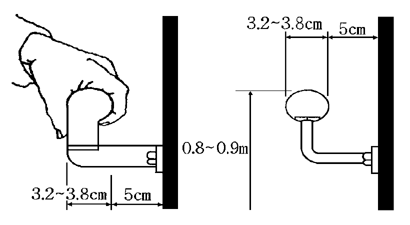
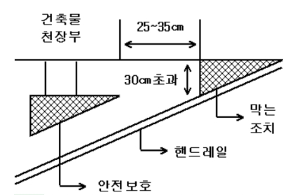

※ 이 사본은 드라이브 원본 htm(한글 97 변환, EUC-KR)을 UTF-8로 변환한 것입니다. 원본에 포함되지 않은 그림 2개는 대체 그림(연혁집 p.275, 안전행정부고시 제2009-67호 [그림4])으로 연결했습니다.
승 강 기 검 사 기 준
제정 '92.7.1 공업진흥청고시 제92-357호
개정 '93.8.3 공업진흥청고시 제93-280호
<중 간 생 략>
개정 '98.5.9 국립기술품질원고시 제98-75호
1. 적용범위
이 기준은 승강기제조및관리에관한법률 제13조제3항 및 동법시행령 제14조의2의 규정에 의하여 건축물이나 공작물에 부착되어 일정한 승강로를 통하여 사람이나 화물을 운반하는데 사용되는 엘리베이터 및 에스컬레이터에 대한 안전검사를 실시하는데 적용한다.
2. 승강기의 종류
|
구 분 |
종 류 |
승 강 기 종 류 |
분 류 기 준 |
|
엘리베이터 |
승 객 용 |
승객용 엘리베이터 침대용 엘리베이터
승객·화물용 엘리베이터
비상용 엘리베이터
장애인용 엘리베이터
전망용 엘리베이터
|
사람의 운송에 적합하게 제작된 엘리베이터이다. 병원의 병상운반에 적합하게 제작된 엘리베이터로, 평상시에는 승객용으로도 사용이 가능하다. 승객 및 화물 겸용에 적합하게 제작된 엘리베이터로, 필요에 따라 승객 또는 화물 위주로 사용이 가능하다. 화재시 소화 및 구조활동에 적합하게 제작된 엘리베이터이다. 장애인(휠체어 사용자 포함)이 이용하기에 적합하게 제작된 엘리베이터이다. 엘리베이터 안에서 외부를 전망하기에 적합하게 제작된 엘리베이터이다. |
|
화 물 용 |
화물용 엘리베이터
자동차용 엘리베이터
덤웨이터
|
화물운반 전용에 적합하게 제작된 엘리베이터(조작자 또는 화물취급자 1인은 탑승할 수 있음)이다. 다만, 적재용량이 1톤 미만으로서 사람이 탑승하지 않는 것은 제외한다. 주차장의 자동차 운반에 적합하게 제작된 엘리베이터이다. 사람이 탑승하지 않으면서 적재용량 1톤미만의 소형화물(서적, 음식물등)운반에 적합하게 제작된 엘리베이터이다. |
|
|
에스컬레이터 |
승객 및 화 물 용 |
에스컬레이터 수평보행기
|
계단형의 디딤판을 동력으로 오르내리게 한 것이다. 평면의 디딤판을 동력으로 이동시키게 한 것으로, 경사도가 15˚ 이하이어야 한다. |
3. 승강기의 구조
3.1 로프식 엘리베이터
(1) 주로프는 다음 각 항의 구조로 하여야 한다
① 직경은 12mm 이상으로 하여야 한다. 다만, 주로프의 안전율이 10이상이 되도록 여러 가닥의 로프를 사용하는 경우에 직경은 10mm이상으로 할 수 있다.
② 3가닥(권동식 엘리베이터의 경우에는 2가닥)이상으로 하여야 한다.
③ 권동식 엘리베이터의 카가 최하 정지위치에 있는 경우에 주로프가 권동에 감기고 남는 권수는 2권 이상이어야 한다.
④ 끝부분은 1가닥마다 로프소켓에 바빗트채움을 하거나 체결식 로프소켓을 사용하여 고정하여야 한다. 다만, 권동식 엘리베이터의 경우에는 권동측의 끝부분을 1가닥마다 클램프고정으로 할 수 있다.
(2) 도르래 또는 권동은 다음 각항의 구조로 하여야 한다.
① 직경은 주로프 직경의 40배 이상으로 하여야 한다. 다만, 도르래에서 주로프가 접하는 부분의 길이가 그 원둘레의 1/4이하인 것은 주로프 직경의 36배 이상으로 할 수 있다.
② 급제동시나 지진 기타의 진동에 의해 주로프가 벗겨질 우려가 있는 경우에는 로프이탈방지장치 등을 설치하여야 한다. 다만, 기계실에 설치된 고정도르래의 경우에는 그러하지 아니하다.
(3) 지지보는 철골조·철골콘크리트조 또는 철골철근콘크리트조로 하여야 한다.
카는 다음 각항의 구조로 하여야 한다.
(1) 사람이나 물건이 부딪쳤을 때 부서지거나 고장이 나지 않도록 견고하여야 한다.
(2) 구조상 경미한 부분(인테리어 목적으로 사용되는 카 내장재를 포함)을 제외하고는 불연재료로 만들거나 씌워야 한다. 다만, 유리를 사용할 경우에는(비상용 엘리베이터는 제외)한국산업규격의 망유리·강화유리·접합유리와 동등 이상의 것을 사용하여야 한다.
(3) 사람이나 물건이 균형추, 승강로벽 등 카 바깥부분에 닿을 염려가 없는 구조로 된 벽 또는 울 및 출입문을 설치하여야 한다. 다만, 자동차용 엘리베이터의 경우에는 출입문의 설치는 제외하나 자동차가 카 밖으로 벗어날 경우에 엘리베이터의 운행을 정지시키는 장치가 설치되어 있어야 한다.
(4) 비상시 외부에서 구출할 수 있는 비상구출구는 다음 각항의 기준에 적합하여야 한다. 다만, 자동차용 엘리베이터와 카 내에 조작반이 없는 화물용 엘리베이터의 경우에는 그러하지 아니하다.
① 카 천장에 설치된 비상구출구는 카 위에서는 공구등을 사용하지 않고 간단한 조작에 의해 쉽게 열 수 있어야 하나, 카 내에서는 열 수 없도록 잠금장치를 갖추어야 하며, 승객의 구출 활동에 장애가 없도록 충분한 공간이 확보되는 위치에 설치하고, 크기는 작은쪽 변의 길이가 0.4m이상, 면적은 0.2㎡이상으로 하여야 한다.
② 카 벽에 설치된 비상구출구는 카 안쪽으로만 열리고, 카 내부에서는 열쇠를 사용하지 않으면 열 수 없어야 하며, 크기는 폭 0.35m이상, 높이 1.5m이상으로 하여야한다.
③ 비상구출구를 열었을 때에는 비상구출구스위치가 작동하여 카가 움직이지 않아야 한다.
(5) 카에는 1개의 출입구만을 설치하여야 한다. 다만, 침대용·화물용 및 자동차용 엘리베이터의 경우에는 2개의 출입구를 설치할 수 있으나, 2개의 문이 동시에 열려 통로로 사용되는 구조이어서는 아니된다.
(6) 카 내부치수 및 도어치수는 KS B 6830(승용엘리베이터와 승강로의 치수)에 따른다. 다만, 카 내부치수는 KS B 6830 또는 용도 및 적재하중을 고려한 최적 카 내부치수와 면적대비시 5%이내의 증가는 허용할 수 있다.
승강로는 다음 각항의 구조로 하여야 한다.
(1) 승강로 밖의 사람이나 물건이 카 또는 균형추에 닿을 염려가 없는 구조로 된 견고한 벽 또는 울 및 출입문(비상구출구를 포함)을 설치하여야 한다. 다만, 옥내 전망을 목적으로 설치되는 승강로 주벽이 일부 없는 전망용 엘리베이터 등 특수구조의 것으로서 화재시 관제운전기능, 낙하물에 대한 보호벽, 보호벽으로부터 2m이내에 사람이 출입하지 않도록 하는 난간이나 화단 또는 연못 등의 설치 및 화재에 대비한 보호기능 등을 구비하여 안전성이 유지될 수 있는 경우에는 그러하지 아니하다.
(2) 승강로의 벽 또는 울 및 출입문은 불연재료로 만들거나 씌워야 한다. 다만, 승강로의 벽(건축법 시행령 제46조의 규정에 의하여 당해 건축물의 다른 부분과 방화구획한 부분 이외의 부분에 한정) 일부에 유리를 사용할 경우에는(비상용 엘리베이터는 제외)한국산업규격의 망유리·강화유리·접합유리 및 복층유리(16mm 이상)와 동등 이상의 것을 사용하여야 한다.
(3) 승강로의 출입구에 접한 승강로비 또는 이와 유사한 부분은 엘리베이터 전용으로 하고, 당해부분의 벽 또는 천장이 실내에 접하는 부분의 마감은 준불연재료로 만든 것으로 하여야 한다.
(4) 1개층에 대한 출입구는 카 1대에 대하여 2개 이상 설치하지 않아야 한다. 다만, 침대용·화물용 및 자동차용 엘리베이터의 경우에는 2개의 출입구를 설치할 수 있으나 2개의 문이 동시에 열려 통로로 사용되는 구조이어서는 아니된다.
(5) 승강장 출입구 바닥 앞부분과 카 바닥 앞부분과의 틈의 너비는 4cm이하로 하여야 한다.
(6) 카 바닥 앞부분과 승강로 벽과의 수평거리는 다음 각 항의 기준에 적합하여야 한다. 다만, 화물용 엘리베이터의 경우에는 그러하지 아니하다.
① 수평거리는 125mm 이하이어야 하며, 출입구가 2개의 엘리베이터의 경우에는 각각의 출입구에 대하여 125mm 이하이어야 한다.
② 수평거리가 125mm를 초과할 경우에는 금속재판 등으로 최상정지층의 바닥아래에서 최하정지층의 출입구 상부까지 출입문을 제외한 카 출입구에 면하는 전체부분에 대하여 보호면을 설치하여야 한다. 이 경우 헤더케이스 상부와 보호면 하단까지의 틈새는 38mm 이하이어야 하나, 보수관리상 부득이한 경우에는 100mm 이하로 할 수 있으며, 자동차용 엘리베이터에 있어서 출입문이 상승개폐문 또는 상하개폐문일 때에는 출입문이 열리는 부분에 대해서는 보호면을 설치하지 아니할 수 있다.
③ 출입구가 2개인 엘리베이터에 있어서 승강로 출입구가 없는 부분과 정지하지 않는 층이 있는 경우에도 제2항의 규정에 의한 보호면을 설치하여야 한다.
(7) 꼭대기틈새 및 피트 깊이는 다음 각 항의 기준에 적합하여야 한다.
① 꼭대기틈새는 카를 최상층에 정지시켜 놓은 상태에서 카의 상부체대와 승강로 천장부와의 수직거리를 측정하여 표 1에서 규정한 수치 이상이어야 한다. 이 경우 카 위의 여러 가지 장치중에서 가장위로 돌출된 것이 승강로 천장부 또는 천장보다 돌출된 것(고정보 등)과 접촉되지 않아야 한다.
② 피트 깊이는 최하층의 바닥면에서 카의 수평투영면에 있는 피트 바닥 또는 가장 높이 돌출된 지중보까지의 수직거리를 측정하여 표 1에서 규정한 수치 이상이어야 한다.
표 1
|
정격속도(m/min) |
꼭대기틈새(m) |
피트깊이(m) |
|
45 이하 |
1.2 |
1.2 |
|
45 초과 ∼ 60 이하 |
1.4 |
1.5 |
|
60 초과 ∼ 90 이하 |
1.6 |
1.8 |
|
90 초과 ∼120 이하 |
1.8 |
2.1 |
|
90 초과 ∼150 이하 |
2.0 |
2.4 |
|
150 초과 ∼180 이하 |
2.3 |
2.7 |
|
180 초과 ∼210 이하 |
2.7 |
3.2 |
|
210 초과 ∼240 이하 |
3.3 |
3.8 |
|
240 초과 |
4.0 |
4.0 |
(8) 승강로의 치수는 KS B 6830(승용엘리베이터와 승강로의 치수)에서 규정한 치수의 면적비율에 따른다.
(9) 승강로 내에 설치되는 돌출물은 엘리베이터의 운행 및 안전상 지장이 없어야 한다.
(10) 승강로 내에는 엘리베이터와 관계없는 급수배관·가스관 및 전선관 등을 설치하지 않아야 한다, 다만, 소방법에 의하여 승강로 천장에 설치하는 화재감지기본체 및 비상방송용 스피커 등을 설치할 수 있다.
(11) 피트 바닥하부는 거실 또는 여러사람이 출입하는 통로 등으로 사용하지 않아야 한다. 다만, 피트 바닥하부를 거실 또는 여러사람이 출입하는 통로 등으로 사용할 경우에는 피트 바닥을 2중슬라브로 하고, 균형추쪽에도 비상정지장치를 설치하거나 균형추측 직하부에 두꺼운 벽을 설치하여야 한다.
(12) 피트에는 유지관리상 지장이 없도록 피트점검용 사다리 또는 출입구를 설치하여야 하며, 다음 각 항의 기준에 적합하여야 한다. 다만, 피트깊이가 1.5m 미만인 경우에는 그러하지 아니하다.
① 사다리는 수직사다리로 설치하여야 한다.
② 피트 깊이가 3.0m를 초과하는 경우에는 출입구를 설치할 수 있다. 이 경우 잠금장치가 있는 금속제 문을 설치하고, 출입구의 폭은 0.75m 이상, 높이는 1.2m 이상으로 하여야 한다.
③ 출입구가 닫혀있지 않는 경우에 엘리베이터가 움직이지 않도록 하는 도어스위치를 설치하여야 한다.
④ 동일 승강로에 2대 이상의 엘리베이터를 설치하는 경우에는 사다리 또는 출입구를 각각 설치하여야 하며, 1개의 출입구를 설치하여 공용하는 경우에는 출입구에서 가장 가까운 엘리베이터만이 제3항의 규정에 의한 도어 스위치와 연동하여 정지하도록 하고, 다른 엘리베이터는 피트에 설치한 각각의 피트 정지스위치에 의해 개별정지가 가능한 구조로 하여야한다.
(13) 동일 승강로에 2대 이상의 엘리베이터를 설치한 경우에 속도가 다르거나 정지층이 달라 피트 바닥의 높이차가 0.6m 이상일 때에는 그 사이에 높이 1.1m 이상의 추락방지용 난간을 견고하게 설치하여야 한다.
3.1.4 전동기·제어기 및 권상기
전동기·제어기 및 권상기는 카마다 설치하여야 하며, 지진 기타의 진동에 의해 움직이거나 넘어지지 않도록 하여야 한다.
기계실은 다음 각항의 구조로 하여야 한다.
(1) 주요한 기기로부터 기둥이나 벽까지의 수평거리는 30cm 이상으로 하여야 한다. 다만, 기기의 배치 및 관리에 지장이 없는 경우에는 그러하지 아니하다.
(2) 바닥면적은 승강로 수평투영면적의 2배 이상으로 하여야 한다. 다만, 기기의 배치 및 관리에 지장이 없는 경우에는 그러하지 아니하다.
(3) 바닥면부터 천장 또는 보의 하부까지의 수직거리는 2m 이상으로 하여야 한다.
(4) 기계실은 당해 건축물의 다른 부분과 내화구조 또는 방화구조로 구획하고, 기계실의 내장은 준불연재료 이상의 재료로 마감하여야 한다. 다만, 기계실 벽면이 외기에 직접 접하는 등 건축물 구조상 내화구조 또는 방화구조로 구획할 필요가 없는 경우에는 불연재료를 사용하여 구획할 수 있다.
(5) 기계실 천장에는 기기를 양정하기 위한 고리 등을 설치하여야 한다.
(6) 기계실의 유지관리에 지장이 없도록 조명 및 환기시설은 다음 각항의 기준에 적합하여야 한다.
① 조명스위치는 출입구 가까이에 설치하고, 조명전원은 엘리베이터의 제어전원과 별도로 분리하여야 하며, 조도는 기기가 배치된 바닥면에서 100Lux 이상이어야 한다.
② 자연환기하는 경우에 환기창 또는 갤러리 등의 합산한 크기는 기계실 바닥면적의 1/20 이상이어야 하고, 실온은 원칙적으로 40˚C 이하를 유지할 수 있어야 한다. 환기창 또는 갤러리 등의 크기가 부족할 경우에는 강제환기장치 또는 공조장치를 설치하여야 하며, 갤러리를 설치하는 경우에는 눈·비가 유입되거나 동절기에 실온이 내려가지 않도록 덧창을 설치하여야 한다.
(7) 기계실에는 엘리베이터와 관계없는 공조설비·급배수설비·전기설비·곤도라설비·항공등용 제어반·TV공청분배기·피뢰침선·기타 설비용 동력선·무선송수신기 또는 변압기 등을 설치하지 않아야 한다. 다만, 기계실의 냉난방설비, 환기를 위한 덕트, 소방법에 의하여 기계실 천장에 설치하는 화재감지기본체 및 비상방송용 스피커 등은 설치 할 수 있다.
(8) 기계실의 바로 위층 또는 인접한 벽면에 물탱크실이 있을 경우에는 물이 범람하는 경우에 대비하여 충분한 침수방지조치를 하여야 한다.
(9) 기계실로 가는 복도·계단 및 출입문 등은 다음 각항의 기준에 적합하여야 한다.
① 복도 등 통로의 도중에 거실이 있거나 창고와 같이 화물을 쌓아 놓아서는 아니되며, 유지관리상 통행에 지장이 없도록 기계실 출입구의 폭과 높이에 해당하는 크기의 통로를 확보하여야 한다.
② 계단은 불연재료로 설치하여야 하고, 발판·난간 및 경사가 있어야 한다. 다만, 위의 조건을 만족하는 사다리(원형사다리 포함)는 계단으로 간주할 수 있으며, 기계실 바닥까지의 높이가 1.5m 미만인 경우에는 수직사다리를 설치할 수 있다. 또한, 기계실 바닥의 높이차가 45cm를 초과하는 경우에도 계단 또는 사다리를 설치하여야 한다.
③ 출입문은 보수관리 및 방재를 고려하여 잠금장치가 있는 금속제 문을 설치하여야 하고, 폭은 0.7m 이상, 높이는 1.8m 이상으로 하여야 하며, 출입문이 외기에 접하는 경우에는 빗물이 침입하지 않는 구조로 하여야 하고, 부식이 없어야 한다.
다음 각항의 안전장치를 설치하여야 한다.
(1) 카 및 승강로의 모든 출입문이 닫혀 있지 않으면 카가 움직이지 않는 장치
(2) 카가 정지하고 있지 않는 층에서는 특수한 키를 사용하지 않으면 밖에서 승강로의 출입문을 열 수 없도록 하는 장치
(3) 조작자가 스위치를 조작하여 운전하는 방식인 경우에는 조작자가 조작을 중지하면 자동적으로 카를 정지시키는 장치
(4) 카 내(카 내에 조작반이 없는 화물용 엘리베이터는 제외) 및 카 위에서 동력을 차단할 수 있는 장치
(5) 카의 속도가 비정상적으로 증대한 경우에는 매분의 속도가 정격속도의 1.3배(정격속도가 45m/min 이하인 엘리베이터는 63m/min)를 넘지 않는 범위내에서 동력을 자동적으로 차단하는 장치. 다만, 정격속도가 45m/min 이하인 엘리베이터는 주로프의 느슨함이 발생하거나 끊기는 경우에 카의 동력을 자동적으로 차단하는 장치를 설치한 때에는 이를 설치하지 아니할 수 있다.
(6) 동력이 차단되었을 때 관성에 의한 전동기의 회전을 자동적으로 제지하는 장치
(7) 카의 하강하는 속도가 (5)에서 규정한 장치가 작동하는 속도를 넘었을 때(정격속도가 45m/min 이하인 엘리베이터는 카의 하강하는 속도가 (5)에서 규정한 장치가 작동하는 속도에 도달하거나 이를 넘었을 때)에는 매분의 속도가 정격속도의 1.4배(정격속도가 45m/min 이하인 엘리베이터는 68m/min)를 넘지 않는 범위내에서 카의 하강을 자동적으로 제지하는 장치. 다만, 정격속도가 45m/min 이하인 엘리베이터는 주로프의 느슨함이 발생하거나 끊기는 경우에 카의 하강을 자동적으로 제지하는 장치를 설치한 때에는 이를 설치하지 아니할 수 있다. 또한, 이 장치는 점차작동식으로 하여야 하며, 정격속도가 45m/min 이하인 엘리베이터는 즉시작동식으로 할 수 있다.
(8) 카 또는 균형추가 승강로 바닥에 충돌하지 않는 범위내에서 카의 승강을 자동적으로 제어하여 정지시키는 장치
(9) 카 또는 균형추가 (7)에서 규정한 장치가 작동하는 속도로 숭강로 바닥에 충돌하는 경우에 충격을 완화하는 장치
(10) 정전 등의 비상시에 카 내에서 외부로 통화할 수 있는 장치, 다만, 카 내에 조작반이 없는 화물용 엘리베이터의 경우에는 그러하지 아니하다.
(11) 권동식 엘리베이터에 있어서 주로프가 이완된 경우에 동력을 자동적으로 차단하는 장치
(12) 적재하중을 초과하면 경보가 울리고 출입문의 닫힘을 자동적으로 제지하는 장치(이 장치의 작동치는 정격 적재하중의 105∼110%를 표준으로 함)
(13) 정전시에 램프중심으로부터 2m 떨어진 수직면상에서 측정하여 1Lux 이상의 조도를 확보할 수 있는 예비조명장치. 다만, 자동차용 엘리베이터와 카 내에 조작반이 없는 화물용 엘리베이터의 경우에는 그러하지 아니하다.
(14) 승강장 문이 카 문과의 연동에 의해 열리는 방식에서는 자동적으로 승강장의 문이 닫히는 쪽으로 힘을 작용시키는 장치
(15) 동력의 상이 바뀌면 카가 역으로 운행하는 것을 방지하기 위한 장치. 다만, 동력의상이 바뀌어도 카가 역으로 운행하지 않는 방식은 제외한다.
전자접촉기 등의 조작회로를 접지하였을 경우에 당해 전자 접촉기 등이 폐로될 염려가 있는 것은 다음 각항에 따라 접속하여야 한다.
(1) 코일의 일단을 접지측의 전선에 접속하여야 한다. 다만, 코일과 접지측 사이에 반도체를 이용하는 전자접촉기 드라이브방식일 경우에는 그러하지 아니하다.
(2) 코일과 접지측의 전선 사이에는 계전기 접점이 없어야 한다. 다만, 코일과 접지측 사이에 반도체를 이용하는 전자접촉기 드라이브방식일 경우에는 그러하지 아니하다.
(3) 과전류 또는 과부하시 동력을 차단시키는 과전류방지기능을 구비하여야 한다.
적재하중은 표 2에 의하여 계산한 후 50kg 단위로 절상한 값으로 하고, 최대정원은 1인당 하중을 65kg으로 계산한 정원으로 한다.
표 2
|
구 분 |
적 재 하 중 |
|
|
승객용 (침대용 제외) 엘리베이터의 카 |
바닥면적이 1.5㎡ 이하의 것 |
바닥면적 1㎡당 370kg으로 계산한 수치 |
|
바닥면적이 1.5㎡를 초과하고 3㎡ 이하인 것 |
바닥면적중 1.5㎡를 초과한 면적에 대해서 1㎡당 500kg으로 계산한 값에 550kg을 더한 수치 |
|
|
바닥면적이 3㎡를 초과 하는 것 |
바닥면적중 3㎡를 초과한 면적에 대해서 1㎡당 600kg으로 계산한 값에 1,300kg을 더한 수치 |
|
|
화물용(침대용 포함)엘리베이터의 카 |
바닥면적 1㎡당 250kg(자동차용 엘리베이터의 경우에는 150kg)으로 계산한 수치 |
|
3.1.9 승강기 부품
승강기제조및관리에관한법률 제6조의 규정에 의한 형식승인을 받은 승강기부품으로써 설치제원에 적합하여야 한다.
다음 (1)∼(11) 이외의 사항은 3.1.3(5)를 제외하고는 3.1.1∼3.1.9에 따른다.
(1) 호출버튼·조작반·통화장치등 승강기의 안팎에 설치되는 모든 스위치의 높이는 바닥면으로부터 0.8m이상 1.2m이하로 설치하여야 한다. 다만, 스위치의 수가 많아 1.2m이내에 설치하는 것이 곤란한 경우에는 1.4m이하까지 완화할 수 있다.
(2) 엘리베이터 내부의 휠체어사용자용 조작반은 진입방향 우측면에 가로형으로 설치하고, 그 높이는 바닥면으로부터 0.85m내외로 하여야 한다. 다만, 승강기의 유효바닥면적이 1.4m×1.4m이상인 경우에는 진입방향 좌측면에 설치할 수 있다.
(3) 출입문의 통과 유효폭은 0.8m이상으로 하여야 한다.
(4) 승강장 출입구 바닥 앞부분과 카 바닥 앞부분과의 틈의 너비는 3cm이하로 하여야 한다.
(5) 문닫힘안전장치를 비접촉식으로 설치할 경우에 바닥면 위 0.3m에서 1.4m사이의 물체를 감지할 수 있도록 설치하여야 한다.
(6) 엘리베이터 내부의 유효바닥 면적은 폭 1.1m이상, 깊이 1.35m이상으로 하여야 한다.
(7) 엘리베이터 내부의 후면에는 출입문의 개폐여부를 확인할 수 있는 견고한 재질의 거울 등을 부착하여야 한다. 다만, 엘리베이터의 유효 바닥면적이 1.4m×1.4m이상인 경우에는 그러하지 아니한다.
(8) 엘리베이터의 내부에는 수평손잡이를 연속하여 설치하되 손잡이에 관한 세부기준은 다음과 같다.
가. 손잡이의 높이는 아래의 그림과 같이 바닥면으로부터 0.8m이상 0.9m이하로 하여야 하며, 2중으로 설치하는 경우에는 윗쪽 손잡이는 0.85m내외, 아랫쪽 손잡이는 0.65m내외로 하여야 한다.
나. 손잡이의 지름은 아래의 그림과 같이 3.2cm이상 3.8cm이하로 하여야 한다.
다. 손잡이를 벽에 설치하는 경우 벽과 손잡이의 간격은 5cm 내외로 하여야 한다.

라. 손잡이의 양끝부분 및 굴절부분에는 점자표지판을 부착할 수 있다.(9) 각 층의 승강장에는 엘리베이터의 도착여부를 표시하는 점멸등 및 음향신호장치를 설치하여야 하며, 엘리베이터 내부에는 도착층 및 운행상황을 표시하는 점멸등 및 음성신호장치를 설치하여야 한다.
(10) 각층의 장애인용 엘리베이터 호출버턴의 0.3m 전면에는 점형블록을 설치하거나 시각장애인이 감지할 수 있도록 바닥재의 질감 등을 달리하여야 한다.
(11) 카내 조작반 및 통화장치와 승강장의 호출버튼에는 점자표시판을 부착하여야 한다.
다음 (1)∼(9) 이외의 사항은 3.1.1∼3.1.9에 따른다.
(1) 기계실은 전용승강로 이외의 부분과 방화구획이 되어 있어야 한다.
(2) 카 내에는 중안관리실 또는 경비실 등과 항상 연락할 수 있는 통화장치를 설치하여야 한다.
(3) 다음 각 항의 예비전원을 설치하여야 한다.
① 예비전원은 자가발전기에 의한 교류예비전원으로서 다른 용도의 급전용량과는 별도로 비상용 엘리베이터의 전대수를 동시에 운전할 수 있는 충분한 전력용량을 확보하여야 한다.
② 공동주택단지에 있어서 단지내 비상용 엘리베이터의 전대수를 동시에 운전할 수 있는 충분한 전력용량을 확보하기 어려운 경우에는 각 동마다 설치된 비상용 엘리베이터의 전대수를 동시에 운전할 수 있는 충분한 전력용량을 다른 용도의 급전용량과는 별도로 확보하여야 하며, 각 동마다 개별급전이 가능하도록 절환장치를 설치하여야 한다.
(4) 정전시에는 다음 각 항의 예비전원에 의하여 엘리베이터를 가동할 수 있도록 하여야 한다.
① 60초 이내에 엘리베이터 운행에 필요한 전력용량을 자동적으로 발생시키도록 하되 수동으로 전원을 작동할 수 있어야 한다.
② 2시간 이상 작동할 수 있어야 한다.
(5) 엘리베이터의 운행속도는 60m/minn 이상으로 하여야 한다.
(6) 비상시 소방활동 전용으로 전환하는 1차 소방스위치(키 스위치)와 3.1.6(1)에서 규정한 안전장치의 기능을 정지시키고 카 및 승강장 문이 열려 있어도 카를 승강시킬 수 있는 2차 소방스위치(키 스위치)를 설치하여야 한다.
(7) 카는 반드시 모든 승강장의 출입구마다 정지할 수 있어야 한다.
(8) 승강로는 승강장에 통하는 출입구 및 기계실에 통하는 와이어로프·전선등의 주위를 제외하고 내화구조의 바닥 및 벽으로 구획하여야 한다.
(9) 피난층이나 그 직상층 또는 직하층의 승강장 및 중앙관리실 또는 경비실 등에는 카를 부르는 장치를 설치하여야 한다.
3.2 유압식 엘리베이터
유압식 엘리베이터의 3.1.1(3), 3.1.2, 3.1.3((7)① 및 (11) 제외), 3.1.5((1)∼(3) 및 (5) 제외), 3.1.6((5)∼(9), (11) 및 (15) 제외), 3.1.7, 3.1.8, 3.1.9, 및 3.1.10에 따르는 것 외에 다음 각항의 구조로 하여야 한다.
3.2.1 간접식에서의 주로프·체인·도르래 및 스프로켓의 구조
(1) 주로프 또는 체인은 다음 각항의 구조로 하여야 한다.
① 주로프의 직경은 12mm 이상이어야 한다. 다만, 주로프의 안전율이 10이상이 되도록 여러가닥의 로프를 사용하는 경우에 주로프의 직경은 10mm 이상으로 할 수 있다.
② 체인은 한국산업규격 KS B 1407(전동용 롤러체인)에 적합한 것이어야 하고, 호칭번호 80 이상으로 하여야 한다.
③ 2가닥 이상으로 하여야 한다.
④ 주로프의 끝부분은 1가닥마다 로프소켓에 바빗트채움을 하거나 체결식 로프소켓을 사용하여 고정하고, 체인의 끝부분은 1가닥마다 강제 고정구를 사용하여 고정하여야 한다.
(2) 도르래 또는 스프로켓은 다음 각항의 구조로 하여야 한다.
① 도르래의 직경은 주로프 직경의 40배 이상으로 하여야 한다. 다만, 도르래에서 주로프가 접하는 부분의 길이가 그 원둘레의 1/4 이하인 것은 주로프 직경의 36배 이상으로 할 수 있다.
② 급제동시나 지진 기타의 진동에 의해 주로프 및 체인이 도르래 및 스프로켓으로부터 벗겨질 우려가 있는 경우에는 로프이탈방지장치등을 설치하여야 한다.
(1) 카를 최상층에서 미속으로 상승시켜 플런저가 이탈방지장치로 정지했을 때 꼭대기부분틈새(카 위에서 측정한 치수로써 천장이 없는 카의 경우에는 카 바닥에서 측정한 치수에서 최상층 출입구 유효높이를 빼낸치수)는 다음 수치 이상이어야 한다.
직접식 : 60cm, 간접식 :
|
(60 + V^2 over706 cm ) |
여기서, V는 카의 상승정격속도(m/min)이다.
(2) 피트 바닥하부는 거실 또는 여러사람이 출임하는 통로 등으로 사용하지 않아야 한다. 다만, 피트 바닥하부를 거실 등으로 사용할 경우에는 피트 바닥을 2중슬라브로 하여야 한다.
유압파워유니트(펌프·유량제어밸브·체크밸브·안전밸브 및 주전동기를 주된 구성요소로 하는 유니트) 및 제어기는 카마다 설치하여야 하며, 지진 기타 진동에 의해 움직이거나 넘어지지 않도록 하여야 한다.
3.2.4 압력배관
압력배관에는 압력계를 설치하여야 하고, 지진 기타의 진동 및 충격을 완화하기 위한 조치가 되어 있어야 한다.
(1) 주요한 기기로부터 기둥이나 벽까지의 수평거리는 50cm 이상으로 하여야 한다. 다만, 기기의 배치 및 관리에 지장이 없는 경우에는 그러하지 아니하다.
(2) 바닥에서부터 천장이나 보의 하단까지의 수직거리는 2m 이상으로 하여야 한다. 다만, 기기의 배치 및 관리에 지장이 없는 경우에는 그러하지 아니하다.
(3) 기계실 바닥은 작동유가 침투하지 않도록 콘크리트·모르타르 등으로 시공하여야 한다.
(4) 기름탱크 전용량의 작동유를 수용할 수 있도록 유압파워유니트의 주위에 기름방벽을 설치하거나 문턱을 높게 하여야 한다.
다음 각항의 안전장치 중 직접식은 (1)∼(7)을, 간접식은 (1)∼(13)을 설치하여야 한다.
(1) 카의 상승시 유압이 이상하게 증대한 경우에 작동압력(펌프로부터의 토출압력)이 상용압력(적재하중을 작용시켜서 정격속도로 상승중의 작동압력)의 1.25배를 초과하지 않을 때 자동적으로 작동을 개시하고, 작동압력이 상용압력의 1.5배를 초과하지 않도록 하는 장치
(2) 동력이 차단되었을 때 유압잭 내의 기름의 역류에 의한 카의 하강을 제지하는 장치
(3) 카의 정지시에 있어서 자연하강을 보정하기 위한 바닥맞춤보정장치(착상면을 기준으로 하여 75m 이내의 위치에서 보정할 수 있어야 함)
(4) 실린더로부터 플런저의 이탈을 방지하기 위한 장치
(5) 전동기의 공전을 방지하기 위한 장치
(6) 카 위에서 운전조작하는 경우에 있어서 꼭대기부분 안전거리인 승강로 천장 또는 보의 하부와 카 상부체대와의 거리를 1.2m 이상 확보하고, 그 이상의 카의 상승을 자동적으로 제어하여 정지시키는 장치. 다만, 카 천장이 없는 자동차용 엘리베이터의 경우에는 그러하지 아니하다.
(7) 압력배관이 파손되었을 때 기름의 누설에 의한 카의 하강을 제지하는 장치. 다만, 조속기 및 비상정지장치가 설치된 경우에는 그러하지 아니하다.
(8) 카의 속도가 비정상적으로 증대한 경우에는 매분의 속도가 카의 하강정격속도에 상당하는 속도의 1.3배(하강정격속도가 45m/min 이하인 엘리베이터는 63m/min)를 초과하지 않는 범위내에서 동력을 자동적으로 차단하는 장치
(9) 카의 하강하는 속도가 (8)에서 규정한 장치가 작동하는 속도를 넘었을 때(하강정격속도가 45m/min 이하인 엘리베이터는 카의 하강하는 속도가 (8)에서 규정한 장치가 작동하는 속도에 도달하거나 이를 넘었을 때)에는 매분의 속도가 하강정격속도의 1.4배(하강정격속도가 45m/min 이하인 엘리베이터는 68m/min)를 넘지 않는 범위내에서 카의 하강을 자동적으로 제지하는 장치. 다만, 하강정격속도가 45m/min 이하인 엘리베이터는 주로프나 체인에 늘어짐이 발생하거나 끊기는 경우에 카의 하강을 자동적으로 제지하는 장치로 할 수 있다. 또한, 주로프나 체인에 늘어짐이 발생하거나 끊기는 경우에 카의 동력을 자동적으로 차단하는 장치를 설치한 엘리베이터는 (8)에서 규정한 장치를 설치하지 아니할 수 있다.
(10) 카가 승강로 바닥에 충돌하지 않는 범위내에서 카의 하강을 자동적으로 제어하여 정지시키는 장치
(11) 카가 승강로 바닥에 충돌하는 경우에 충격을 완화하는 장치
(12) 카가 하강중에 어떤 장애물에 의해 정지하여 주로프 또는 체인이 이완된 경우에 동력을 자동적으로 차단하는 장치
(13) 간접식 유압엘리베이터에 있어서 (4)에서 규정한 장치가 작동하기 전에 플런저의 상승을 자동적으로 제어하여 정지시키는 장치
3.3.1 일반구조
다음 각항의 구조로 하여야 한다.
(1) 사람이나 물건이 에스컬레이터 또는 수평보행기의 각부분에 끼이거나 부딪히는 일이 없도록 안전한 구조로 하여야 한다.
(2) 에스컬레이터의 경사도는 30°이하로 하여야 하고, 수평보행기의 경사도는 12°이하로 하여야 한다. 다만, 에스컬레이터의 층고가 6m 이하일 때에는 35°이하로 할 수 있으며, 수평보행기의 디딤면이 고무제품 등 미끄러지기 어려운 구조일 경우에는 경사도를 15°이하로 할 수 있다.
(3) 디딤판의 양쪽에 난간을 설치하고 난간 윗부분의 핸드레일과 디딤판이 동일방향 및 동일 속도로 움직여야 한다. 다만, 옥외에 설치되는 경우에는 핸드레일을 고정식으로 할 수 있다.
(4) 에스컬레이터의 디딤판의 속도는 30m/min 이하로 하여야 하고, 수평보행기 디딤판의 속도는 경사도가 8°이하의 것은 50m/min 이하, 경사도가 8°를 초과하는 것은 40m/min 이하로 하여야 한다.
3.3.2 안전장치
다음 각 항의 안전장치를 설치하여야 한다.
(1) 디딤판체인이 절단되었을 때 디딤판의 승강을 자동적으로 정지시키는 장치
(2) 승강장에 근접하여 설치한 방화셔터 등이 닫히기 시작할 때 디딤판의 승강을 자동적으로 정지시키는 장치
(3) 승강장에서 디딤판의 승강을 정지시키는 것이 가능한 장치
(4) 승강구의 가까운 위치에서 사람이나 물건이 디딤판 측면과 스커트가드와의 사이에 강하게 끼였을 때 끼인 물체가 콤플레이트에 도달하기 전에 디딤판의 승강을 자동적으로 정지시키는 장치. 이 장치는 승강로 상하부 좌우측에 각각 1개소 이상 설치하여야 한다. 다만, 수평보행기의 경우에는 그러하지 아니하다.
(5) 사람이나 물건이 핸드레일 인입구에 끼였을 때 디딤판의 승강을 자동적으로 정지시키는 장치
(6) 동력이 차단되었을 때 관성에 의한 전동기의 회전을 자동적으로 제지하는 장치
(7) 구동체인이 절단되었을 때 동력을 차단하고 역행을 방지하는 장치 또는 상승중 비정상 역행구동시 구동정지와 동시에 제동역할을 하는 장치. 다만, 수평보행기의 경우에는 그러하지 아니하다.
(8) 상하 승강장에서 디딤판과 콤플레트 사이에 사람이나 물건이 끼이지 않도록 하는 장치
(9) 승강로의 상하부의 좌우에 고정되어 디딤판이 들려지는 상태에서의 운행이탈을 감지하여 디딤판의 승강을 제어하여 정지시키는 장치. 다만, 수평보행기의 경우에는 그러하지 아니하다.
3.3.3 승강기 부품
승강기제조및관리에관한법률 제6조의 규정에 의한 형식승인을 받은 승강기부품으로써 설치제원에 적합하여야 한다.
3.4.1 주로프·체인·도르래·권동 및 지지보의 구조
(1) 주로프 또는 체인은 다음 각항의 구조로 하여야 한다.
① 체인은 한국산업규격 KS B 1407(전동용 롤러체인)에 적합한 것이어야 한다.
② 3가닥 이상으로 하여야 한다. 다만, 적재하중이 500kg 이하이거나 권동식 또는 유압식인 경우에는 2가닥 이상으로 할 수 있다.
③ 권동식 덤웨이터에 있어서 카가 최하 정지위치에 있는 경우에도 주로프가 권동에 감기고 남는 권수는 1.5권 이상이어야 한다.
④ 주로프의 끝부분은 1가닥마다 로프소켓에 바빗트채움을 하거나 체결식 로프소켓을 사용하여 고정하여야 하고, 체인의 끝부분은 1가닥마다 강제 고정구를 사용하여 고정하여야 한다. 다만, 적재하중이 500kg이하인 경우에는 클립고정으로 할 수 있고, 권동식 덤웨이터의 경우에는 권동쪽의 끝부분을 클램프고정으로 할 수 있다.
(2) 도르래 또는 권동의 직경은 주로프 직경의 40배 이상(적재하중이 500kg 이하인 경우에는 30배 이상)으로 하여야 한다. 다만, 도르래에서 주로프가 접하는 부분의 길이가 그 원둘레의 1/4 이하인 것은 주로프 직경의 36배 이상(적재하중이 500kg 이하인 경우에는 25배 이상)으로 할 수 있다.
(3) 지지보는 철골조·철근콘크리트조 도는 철골철근콘크리트조로 하여야 한다.
3.4.2 카의 구조
카는 다음 각항의 구조로 하여야 한다.
(1) 카에는 1개의 출입구만을 설치하여야 한다. 다만, 출입구가 동시에 개방될 때 경보버저가 작동하도록 하는 등 안전상의 필요한 조치를 강구한 경우에는 2개의 출입구를 설치할 수 있다.
(2) 카의 각부분은 화물을 싣거나 내리거나 또는 화물의 쓰러짐에 의한 충격에 대해서 부서지거나 고장이 나지 않도록 견고하여야 한다.
(3) 구조상 경미한 부분을 제외하고는 불연재료로 만들거나 씌워야 한다.
3.4.3 승강로의 구조
승강로는 다음 각 항의 구조로 하여야 한다.
(1) 승강로 밖의 사람이나 물건이 카 또는 균형추에 닿을 염려가 없는 구조로 된 견고한 벽 또는 울 및 출입문을 설치하여야 한다.
(2) 승강로의 벽 또는 울 및 출입문은 불연재료로 만들거나 씌워야 한다.
(3) 1개층에 대한 출입구는 카 1대에 대하여 2개이상 설치하지 않아야 한다. 다만, 출입구가 동시에 개방될 때 경보버저가 작동하도록 하는 등 안전상의 필요한 조치를 강구한 경우에는 2개의 출입구를 설치할 수 있다.
(4) 출입구 바닥 앞부분과 카 바닥 앞부분과의 틈의너비는 4cm 이하로 하여야 한다.
(5) 카가 상승할 수 있는 최상위치에 정지했을 때의 꼭대기 틈새와 카가 하강할 수 있는 최하위치에 정지했을 때의 카 하부틈새는 5cm 이상으로 하여야 한다.
3.4.4 전동기·제어기 및 권상기 또는 유압파워유니트 및 제어기
로프(체인)식의 전동기·제어기 및 권상기 또는 유압식의 유압파워유니트(펌프·유량제어밸브·체크밸브·안전밸브 및 주전동기를 주된 구성요소로 하는 유니트) 및 제어기는 카마다 설치하여야 하며, 지진 기타의 진동에 의해 움직이거나 넘어지지 않도록 하여야 한다.
기계실은 다음 각항의 구조로 하여야 한다.
(1) 바닥면적은 승강로 수평투영면적 이상으로 하여야 한다. 다만, 기기의 배치 및 관리에 지장이 없는 경우에는 그러하지 아니하다.
(2) 천장의 높이는 1m 이상으로 하여야 한다. 다만, 기기의 배치 및 관리에 지장이 없는 경우에는 그러하지 아니하다.
(3) 기계실은 당해 건축물의 다른 부분과 내화구조 또는 방화구조로 구획하고, 기계실의 내장은 준불연재료 이상의 재료로 마감하여야 한다. 다만, 기계실 벽면이 외기에 직접 접하는 등 건축물 구조상 내화구조 또는 방화구조로 구획할 필요가 없는 경우에는 불연재료를 사용하여 구획할 수 있다.
(4) 유지관리에 지장이 없도록 출입구 가까이에 조명장치를 설치하여야 한다.
(5) 점검구의 폭 및 높이는 각각 60cm 이상으로 하여야 한다. 다만, 기기의 배치 및 관리에 지장이 없는 경우에는 그러하지 아니하다. 또한, 점검구에는 잠금장치를 갖춘 금속제의 문을 설치하여야 한다.
(6) 유지관리상 지장이 없도록 기계실의 점검구에 이르는 통로를 확보하여야 하며, 다음 각항의 기준에 적합하여야 한다.
① 통로의 도중에 거실이 있거나 창고와 같이 화물을 쌓아두어서는 아니되며, 유지관리상 통행에 지장이 없도록 기계실 출입문의 폭과 높이에 해당하는 크기의 통로를 확보하여야 한다.
② 기계실 출입구의 소재가 명확하지 않을 경우에는 출입구의 위치와 기계실로 가는 경로를 최상층 출입구 부근에 명시하여야 한다.
③ 기계실로 가는 천장에 개구부를 설치할 경우에는 개구부의 폭과 높이는 각각 60cm 이상으로 하고, 기계실 출입구에 가깝게 설치하여야 하며, 천장 위를 통하는 부분은 발이 빠지지 않도록 견고하게 보강하여야 한다.
④ 기계실의 출입구 또는 개구부의 높이가 바닥면보다 3m 이상 높은 위치에 있을 경우에는 사다리 등을 고정설치하여야 하며, 옥외 사다리 등에서 추락의 위험이 있을 경우에는 추락방지를 위한 보호조치를 하여야 한다.
(7) 승강기 이외의 설비는 기계실과 구획되어 있어야 한다.
(8) 점검용 콘센트를 점검구 가까이에 설치하여야 한다.
다음 각항의 안전장치 중 로프(체인)식은 (1)∼(8)을, 유압식은 (1), (2), (4) 및 (6)∼(13)을 설치하여야 한다.
(1) 승강로의 모든 출입문이 닫혀 있지 않으면 카가 움직이지 않는 장치
(2) 카가 정지하고 있지 않는 층에서는 특수한 키를 사용하지 않으면 밖에서 승강로의 출입문을 열수 없도록 하는 장치
(3) 동력이 차단되었을 때에 관성에 의한 전동기의 회전을 자동적으로 제지하는 장치
(4) 카가 정지하는 최상층 또는 최하층을 지나쳐 버리는 경우에 카의 승강을 자동적으로 제어하여 정지시키는 장치
(5) 권동식 덤웨이터에 있어서 주로프가 이완된 경우에 동력을 자동적으로 차단하는 장치
(6) 수동개폐방식의 출입문인 경우에 출입문 개방방지를 위한 경보장치
(7) 카 내 및 출입구의 보기 쉬운 위치에 적재하중, 사람의 탑승금지 등의 주의사항을 명시한 표지
(8) 1개층에 있어서 2개의 출입구가 설치된 경우에는 출입구의 동시개방을 금지하기 위하여 출입구의 보기 쉬운 위치에 게시한 주의 표지
(9) 카의 상승시 유압이 이상하게 증대된 경우에 작동압력이 상용압력의 1.25배를 초과하지 않을 때 자동적으로 작동을 개시하고, 작동압력이 상용압력의 1.5배를 초과하지 않도록 하는장치
(10) 동력이 차단되었을 때 유압잭 내의 기름의 역류에 의한 카의 하강을 제지하는 장치
(11) 실린더로부터 플런저의 이탈을 방지하기 위한 장치
(12) 전동기의 공전을 방지하기 위한 장치
(13) 간접식 유압엘리베이터에 있어서 (11)에서 규정한 장치가 작동하기 전에 플런저의 상승을 자동적으로 제어하여 정지시키는 장치
3.4.7 승강기 부품
승강기제조및관리에관한법률 제6조의 규정에 의한 형식승인을 받은 승강기부품으로써 설치제원에 적합하여야 한다.
단독주택에 설치된 승객용 엘리베이터로써 적재하중 200kg이하, 승강행정 10m 이하를 말한다.
3.5.1 주로프·체인·도르래·권동 및 지지보의 구조
(1) 주로프 또는 체인은 다음 각항의 구조로 하여야 한다.
① 주로프의 직경은 8mm 이상으로 하여야 한다.
② 체인은 한국산업규격 KS B 1407(전동용 롤러체인)에 적합한 것이어야 하고, 호칭번호 60 이상으로 하여야 한다.
③ 주로프는 3가닥(권동식 또는 유압식 소형 엘리베이터는 2가닥) 이상으로 하고, 체인은 2가닥 이상으로 하여야 한다.
④ 권동식 소형 엘리베이터에 있어서 카가 최하 정지위치에 있는 경우에도 주로프가 권동에 감기고 남는 권수는 1.5권 이상이어야 한다.
⑤ 주로프의 끝부분은 1가닥마다 로프소켓에 바빗트채움을 하거나 체결식 로프소켓을 사용하거나 클립고정으로 하고, 체인의 끝부분은 1가닥마다 강제고정구를 사용하여 고정하여야 한다. 다만, 권동식 소형엘리베이터의 경우에는 권동쪽의 끝부분을 1가닥마다 클램프고정으로 할 수 있다.
(2) 도르래 또는 권동의 직경은 주로프 직경의 30배 이상으로 하여야 한다. 다만, 도르래에서 주로프가 접하는 부분의 길이가 그 원둘레의 1/4이하인 것은 주로프 직경의 25배 이상으로 할 수 있다.
(3) 지지보는 철골조·철근콘크리트조 또는 철골철근콘크리트조로 하여야 한다.
3.5.2 카의 구조
카는 다음 각항의 구조로 하여야 한다.
(1) 사람이나 물건이 균형추, 승강로 벽 등 카 바깥부분에 닿을 염려가 없는 구조로 된 견고한 벽 또는 울 및 출입문을 설치하여야 한다.
(2) 카에는 천장을 설치하여야 한다. 다만, 비상구출구는 설치하지 아니할 수 있다.
(3) 카의 출입구는 2개 이하로 하여야 한다. 다만, 출입구를 2개 설치한 경우에는 2개의 문이 동시에 열려 통로로 사용되는 구조이어서는 아니된다.
3.5.3 승강로의 구조
승강로는 다음 각항의 구조로 하여야 한다.
(1) 승강로 밖의 사람이나 물건이 카 또는 균형추에 닿을 염려가 없는 구조로 된 견고한 벽 또는 울 및 출입문을 설치하여야 한다.
(2) 1개층에 대한 출입구는 카 1대에 대하여 2개이상 설치하지 않아야 한다.
(3) 출입구 바닥 앞부분과 카 바닥 앞부분과의 틈의 너비는 4CM 이하로 하여야 한다.
(4) 카가 상승할 수 있는 최상위치에 정지했을 때의 꼭대기틈새와 카가 하강할 수 있는 최하위치에 정지했을 때의 카 하부틈새는 5cm 이상으로 하여야 한다.
3.5.4 전동기·제어기 및 권상기 또는 유압파워유니트 및 제어기
로프(체인)식의 전동기·제어기 및 권상기 또는 유압식의 유압파워유니트(펌프·유량제어밸브·체크밸브·안전밸브 및 주전동기를 주된 구성요소로 하는 유니트) 및 제어기는 카마다 설치하여야 하며, 지진 기타의 진동에 의해 움직이거나 넘어지지 않도록 하여야 한다.
기계실이 있는 경우에는 다음 각항의 구조로 하여야 한다.
(1) 바닥면적은 승강로 수평투영면적 이상으로 하여야 한다. 다만, 기기의 배치 및 관리에 지장이 없는 경우에는 그러하지 아니하다.
(2) 천장의 높이는 1m 이상으로 하여야 한다. 다만, 기기의 배치 및 관리에 지장이 없는 경우에는 그러하지 아니하다.
(3) 점검구의 폭 및 높이는 각각 0.6m 이상으로 하여야 한다. 다만, 기기의 배치 및 관리에 지장이 없는 경우에는 그러하지 아니하다. 또한, 점검구에는 잠금장치를 갖춘 금속제의 문을 설치하여야 한다.
(4) 유지관리상 지장이 없도록 기계실의 점검구에 이르는 통로를 확보하여야 한다.
(5) 기계실에는 소요설비 이외의 것을 설치하면 아니된다.
(6)점검용 콘센트를 점검구 가까이에 설치하여야 한다.
3.5.6 안전장치
다음 각항의 안전장치 중 로프(체인)식은 (1)∼(11)을, 유압식은 (1)∼(3), (6)∼(8) 및 (10)∼(16)을 설치하여야 한다.
(1) 카 및 승강로의 모든 출입문이 닫혀 있지 않으면 카가 움직이지 않는 장치
(2) 카가 정지하고 있지 않는 층에서는 특수한 키를 사용하지 않으면 밖에서 승강로의 출입문을 열 수 없도록 하는 장치
(3) 카 내 및 카 위(카 위에서 운전조작하는 경우)에서 동력을 차단할 수 있는 장치
(4) 카의 속도가 정격속도를 현저하게 초과하거나 주로프 또는 체인이 이완된 경우에 동력을 자동적으로 차단하고 카의 하강을 자동적으로 제지하는 장치
(5) 동력이 차단되었을 때에 관성에 의한 전동기의 회전을 자동적으로 제지하는 장치
(6) 카가 정지하는 최상층 또는 최하층을 지나쳐 버리는 경우에 카의 승강을 자동적으로 제어하여 정지시키는 장치
(7) 카 또는 균형추가 승강로 바닥에 충돌하는 경우에 충격을 완화하는 장치. 다만, 승강행정이 5m 이하인 경우에는 설치하지 아니할 수 있다.
(8) 정전 등의 비상시에 카 내에서 외부로 연락할 수 있는 전화장치
(9) 권동식에 있어서는 주로프가 이완된 경우에 동력을 자동적으로 차단하는 장치
(10) 카 위에서 운전조작하는 경우에 있어서 꼭대기 부분 안전거리를 1.2m 이상 확보하고, 그 이상의 카의 상승을 자동적으로 제어하여 정지시키는 장치
(11) 승강로 하부에서 카를 운전하는 경우에 있어서 아랫부분 안전거리를 1.2m 이상 확보하고, 그 이하의 카의 하강을 자동적으로 제어하여 정지시키는 장치
(12) 카의 상승시 유압이 이상하게 증대한 경우에 작동압력이 상용압력의 1.25배를 초과하지 않을 때 자동적으로 작동을 개시하고, 작동압력이 상용압력의 1.5배를 초과하지 않도록 하는 장치
(13) 동력이 차단되었을 때 유압잭 내의 기름의 역류에 의한 카의 하강을 제지하는 장치
(14) 실린더로부터 플런저의 이탈을 방지하기 위한 장치
(15) 전동기의 공전을 방지하기 위한 장치
(16) 간접식 유압엘리베이터에 있어서 (14)에서 규정한 장치가 작동하기 전에 플런저의 상승을 자동적으로 제어하여 정지시키는 장치
3.5.7 적재하중 및 최대정원
카의 적재하중은 바닥면적 1㎡당 180kg으로 계산한 수치 이상으로 하고, 최소 130kg으로 하며, 최대정원은 1인당 하중을 65kg으로 계산한 정원으로 한다.
3.5.8 승강기 부품
승강기제조및관리에관한법률 제6조의 규정에 의한 형식승인을 받은 승강기부품으로써설치제원에 적합하여야 한다.
4. 검사방법 및 판정기준
4.1 로프식 엘리베이터
(1) 기계실의 구조 및 설비
① 주로프·조속기로프 및 층상선택기의 스티일테이프 등은 기계실 바닥의 관통부분과 접촉되지 않아야 하고, 엘리베이터 관련 설비 이외의 것은 기계실 바닥을 관통하여서는 아니된다.
② 기계실에는 소요설비 이외의 것이 없도록 유지되어 있어야 한다.
③ 유지관리에 지장이 없도록 기계실의 조도는 기기가 배치된 바닥면에서 100Lux 이상이어야 하고, 환기는 적절하여야 하며, 실온은 원칙적으로 40°이하를 유지하도록 하여야 한다.
④ 출입구의 자물쇠의 잠금장치는 양호하여야 한다.
⑤ 기계실로 가는 복도·계단 및 출이문 등은 유지관리상 지장이 없어야 한다.
⑥ 비상용 엘리베이터의 기계실은 전용승강로 이외의 부분과 방화구획으로 되어 있어야 한다.
⑦ 권상기가 설치되어 있는 곳에는 비상시 사용할 수 있는 권상기의 브레이크 개방레버와 수동핸들을 갖추고 있어야 한다. 다만, 플라이휠이 설치되어 있는 경우에는 플라이휠을 수동핸들로 간주할 수 있다. 또한, 브레이크를 수동으로 개방할 수 없는 경우에는 비상전원에 의하여 브레이크를 개방할 수 있는 장치를 설치하여야 하며, 그 작동이 연속적이어서는 아니된다.
⑧ 비상구출작업을 위하여 수권조작 등을 할 경우에는 카가 유도하는 승강장에 정확히 도착하였는지를 조작자가 확인할 수 있는 조치가 되어 있어야 한다.
⑨ 카 내와 연결하는 통화장치의 작동상태는 양호하여야 한다. 다만, 카내에 조작반이 없는 화물용 엘리베이터의 경우에는 그러하지 아니하다.
기계실은 누수가 없이 청결하여야 한다.
(2) 수전반·주개폐기·제어반·전기배관 및 배선
① 수전반 및 주개폐기는 원칙적으로 기계실 출입구 내부 가까이 설치하고, 안전하고 용이하게 조작되도록 하여야 한다.
② 제어반 기타의 제어장치의 설치상태는 견고하고, 지진 기타의 진동에 의해 움직이거나 넘어지지 않는 조치가 되어 있어야 한다.
③ 제어반상의 각 스위치의 접점 및 작동상태는 양호하여야 한다.
④ 절연저항은 각 회로마다 각각 표 3의 규정에 함격하여야 한다. 다만, 절연저항은 개폐기 또는 과전류차단기로 구획할 수 있는 전로마다 검사할 수 있다.
표 3
(단위:㏁)
|
회로의 용도 |
회로의 사용전압 |
절연저항 |
|
전동기 주회로 |
300V 이하의 것 |
0.2 이상 |
|
300V를 초과 400V 이하의 것 |
0.3 이상 |
|
|
400V를 초과하는 것 |
0.4 이상 |
|
|
제어회로 신호회로 조명회로 |
150V 이하의 것 |
0.1 이상 |
|
150V를 초과 300V 이하의 것 |
0.2 이상 |
비고 1. 전동기 주회로의 절연저항은 제어반의 각 과전류차단기를 끊은 상태에서 검사한다.
제어회로의 절연저항은 각 도어스위치를 닫고, 과전류차단기를 끊은 상태에서 검사한다.
2. 반도체, 전해콘덴서·전자관 등의 전자기기를 포함한 회로에 대하여는 적당한 절연저항계를 사용하여 검사하거나, 전압계를 사용하여 다음 식에 의하여 절연저항을 산출한다.
절연저항(㏁) =
여기에서 Rm : 사용전압계의 1V당의 저항(Ω)
E : 사용전압계의 당시의 측정범위(V)
e : 측정회로의 상용조작 전원의 전압(V)
ex : 당해 측정개소에서의 전압계의 지시전압(V)
이 경우에 전원의 마이너스측을 접지하고, 플러스측에 전압계의 플러스단자를 측정개 소에 전압계의 마이너스단자를 잇는다.
⑤ 비상용 엘리베이터의 경우에 예비전원의 설치상태는 양호하여야 한다.
⑥ 비상용 엘리베이터가 비상용으로 운저될 경우에는 다른 엘리베이터의 영향을 받지 않아야 한다.
(3) 전동기·제동기 및 권상기
① 전동기 및 권상기의 설치상태는 견고하고, 지진 기타의 진동에 의해 움직이거나 넘어지지 않는 조치가 되어 있어야 한다.
② 전동기의 운전상태는 양호하여야 한다.
③ 제동기의 설치상태는 견고하고, 라이닝의 접촉상태는 양호하며 편마모 등 심한 마모가 없어야 하고, 제동기 스프링이 적정하게 압축되어 있는지를 확인할 수 있는 조치가 되어 있어야 한다. 또한, 동력 차단 때 카를 안전하게 감속정지(최대정지거리는 검속주행거리에 균형추쪽 주행여유거리를 더한 수치 이내일 것)시킬 수 있어야 하고, 카가 제동기와 레일과의 마찰에 의하여 정지되는 방식의 경우에는 카 또는 균형추레일 양쪽에 제동력이 균등하게 작용하도록 설치되어 있어야 한다.
④ 권상기의 도르래는 몸체에 균열이 없어야 하고, 자동정지때 주로프와의 사이에 심한 미끄러움 및 마모가 없어야 한다. 또한, 감속기구가 있는 것은 톱니바퀴에 심한 마모 및 점식 등으로 카 운행에 지장이 없어야 하고, 이물림상태는 양호하여야 한다. 권상기 도르래홈의 언더컷의 잔여량은 1mm 이상이어야 하고, 권상기 도르래에 감긴 주로프 가닥 끼리의 높이차는 2mm 이내이어야 한다.
⑤ 도르래 또는 권동은 급제동시나 지진 기타의 진동에 의해 주로프가 벗겨지지 않도록 조치되어 있어야 한다.
⑥ 도르래 또는 권동에는 사람의 손·물건 등이 끼이지 않도록 보호망 등이 설치되어 있어야 한다.
⑦ 로프브레이크 장치가 설치되어 있는 경우에 설치상태는 견고하고, 작동상태는 양호하여야 한다.
(4) 하중시험
하중시험은 다음 3가지 경우에 대하여 각기 정격전압 및 정격주파수에서 속도 및 전류를 측정하고 표 4의 규정에 합격하여야 한다. 또한 교류 엘리베이터에 있어서는 적재하중의 25%, 50% 및 75%의 하중을 실은 경우의 속도 및 전류에 대해서도 측정한다.
① 적재하중을 싣지 않은 경우
② 적재하중의 100%의 하중을 살은 경우
③ 적재하중의 110%의 하중을 실은 경우
표 4
|
항 목 |
적재하중을 싣지 않은 경우 및 적재하중의 110%의 하중을 실은 경우 |
적재하중의 100%의 하중을 실은 경우 |
|
속 도 |
설계도면 및 시방서에 기재된 속도의 125% 이하 |
상승할 때의 속도가 설계도면 및 시방서에 기재된 속도의 90%이상 105% 이하 |
|
전 류 |
전동기 정격전류치의 120% 이하 |
전동기 정격전류치의 110%이하 |
(5) 조속기의 작동상태
작동속도를 측정하여 표 5의 규정에 합격하여야 한다. 이 경우 직접 카를 운전함으로써 과속도가 얻어지지 않을 경우에는 조속기를 카와 무관계로 작동하여 카의 속도가 상당히 증가한 것과 같은 효과를 주어서 측정할 수 있다.
표 5
|
종 류 |
정격속도 45m/min 이하의 것 |
정격속도 45m/min 초과하는 것 |
|
과 속 스위치 |
63m/min 이하에서 작동할 것 |
정격속도의 1.3배 이하에서 작동할 것 |
|
캣 치 |
과속스위치가 떨어짐과 동시 또는 떨어진 후 작동하고 또한, 하강방향의 속도가 68m/min를 넘기 전에 작동할 것 |
과속스위치가 떨어진 후 작동하고 또한, 하강방향의 속도가 정격속도의 1.4배를 넘기전에 작동할 것
|
비고 균형추에 비상정지장치가 설치되어 그 작동을 조속기로 할 때는 균형추쪽의 조속기는 카쪽의 것보다 저속에서 작동하여서는 아니된다.
(6) 비상정지장치의 작동상태
카 내에 65kg의 하중을 싣고, 가능한 최저속도로 다음 ① 및 ②의 사항을 검사한다.
① 카를 일단 정지시키고 조속기의 캣치를 작동시킨 다음 다시 카가 하강하게끔 권상기를 조작한다. 도르래가 회전하여도 카가 하강하지 않게 됨으로써 비상정지장치가 작동한 것을 확인한다. 또한, 권상기 구동방식이 상기와 다른 경우에는 브레이크를 개방하여 카를 하강시켜도 카가 하강하지 않거나 순간적인 로프의 이완이 발생하면서 카가 하강하지 않게 됨으로써 비상정지장치가 작동한 것을 확인한다. 다만, 조속기를 설치하지 않는 방식의 비상정지장치에 대하여는 주로프를 늘어뜨려 비상정지장치를 작동시킨 후 카를 강제로 하강시켜도 하강하지 않게 됨으로써 비상정지장치가 작동한 것을 확인한다.
비고 균형추의 비상정지장치는 앞에서 설명한 카 또는 균형추를 각기 균형추 또는 카로 바꾸어 검사한다.
② 비상정지장치가 작동된 상태에서 기계장치 및 조속기로프에는 아무런 손상이 없어야 한다. 또한, 비상정지장치는 좌우 양쪽 다같이 균등하게 작용하고, 카 바닥의 수평도는 어느 부분에서나 1/30 이내이어야 한다.
(1) 카 바닥 앞부분과 승강로 벽과의 수평거리(화물용 엘리베이터는 제외)는 125mm 이하를 유지하고 있어야 하며, 출입구가 2개인 엘리베이터의 경우에는 각각의 출입구쪽 카 바닥 앞부분과 승강로 벽과의 수평거리는 125mm 이하를 유지하고 있어야 한다.
(2) 용도 또는 승강기 종류, 적재하중 또는 최대정원의 표시가 보기 쉬운 위치에 있고, 그 기재내용이 적정하여야 한다.
(3) 도어스위치의 작동상태는 양호하여야 한다.
(4) 조작설비의 설치 및 작동상태는 양호하며, 카 내 정지스위치의 작동상태는 양호하여야 한다. 다만, 카 내에 조작반이 없는 화물용 엘리베이터의 경우에는 그러하지 아니하다. 또한, 카 내 정지스위치는 불필요한 조작을 방지하기 위하여 조작반 내에 설치하거나 보호덮게 등으로 씌워야 한다.
(5) 외부와 연결하는 통화장치의 작동상태는 양호하여야 한다. 다만, 카 내에 조작반이 없는 화물용 엘리베이터의 경우에는 그러하지 아니하다.
(6) 비상용 엘리베이터에 있어서는 중앙관리실 또는 경비실 등과 연결하는 통화장치의 작동상태는 양호하여야 한다.
(7) 비상용 엘리베이터에 있어서는 비상운전(비상호출스위치·비상호출버튼·1차소방스위치 및 2차소방스위치의 조작에 의한 모든 운전)중에는 비상운전등이 점등되어야 한다.
(8) 비상용 엘리베이터에 있어서 1차소방스위치(키 스위치)를 조작한 후 다음 동작이 적정한가를 확인한다.
① 행선층버튼 또는 문닫힘버튼을 계속 누르고 있을 때 문의 닫힘 동작이 가능하고, 문이 완전히 닫히기 전에 손을 떼면 문이 다시 열려야 한다.
② 카 내에서의 행선층 등록은 다수의 등록이 가능하지만 출발 후 가장 가까운 층에 도착하면 남아 있는 모든 등록은 취소되어야 하고, 승강장 호출에는 카가 응답하지 않아야 한다.
③ 문닫힘안전장치 및 과부하감지장치가 작동하지 않아야 한다.
④ 목적층에 자동착상한 후에도 문열림버튼을 누르고 있을 때에만 문의 열림동작이 가능하고, 문이 완전히 열리기 전에 손을 떼면 문이 다시 닫혀야 한다.
(9) 비상용 엘리베이터에 있어서 1차 소방스위치를 작동시킨 상태에서 2차 소방스위치(키 스위치)를 작동시켜 다음 동작이 적정한가를 확인한다.
① 카 및 승강장의 문을 인위적으로 열어 놓고 행선층 버튼을 약 3초간 계속 누르면 카는 주행을 시작하여 목적층에 도착하여야 한다.
② 경보는 행선층 버튼을 누르면 울리기 시작하여 주행시작후 멈추어야 한다.
③ 경보음이 멈춘 후에는 행선층 버튼 및 2차 소방스위치에서 손을 떼어도 2차 소방운전 동작이 당초의 목적층에 도달할 때까지 유효하여야 한다.
④ 2차 소방스위치는 자동복귀식으로 하고, 1차 소방스위치를 작동시킨 상태에서만 2차 소방운전이 가능하여야 한다.
(10) 승강장 출입구 바닥 앞부분과 카 바닥 앞부분과의 틈의 너비는 4cm 이하이어야 한다. 다만, 장애인용 엘리베이터의 경우에는 그러하지 아니하다.
(11) 정전시에 램프중심으로부터 2m 떨어진 수직면상의 조도를 1Lux 이상으로 비출 수 있는 예비조명장치의 작동상태는 양호하여야 한다. 다만, 자동차용 엘리베이터와 카 내에 조작반이 없는 화물용 엘리베이터의 경우에는 그러하지 아니하다.
(12) 카 도어록을 설치하였을 경우에 작동상태는 양호하여야 한다.
(13) 조작자가 스위치를 조작하여 운전하는 방식인 경우에는 조작자가 조작을 중지하면 자동적으로 카를 정지시키는 장치의 작동상태는 양호하여야 한다.
(1) 비상구출구는 카 밖에서 간단한 조작으로 열 수 있어야 한다. 또한, 비상구출구스위치의 설치상태는 견고하고, 작동상태는 양호하여야 한다. 다만, 자동차용 엘리베이터와 카 내에 조작반이 없는 화물용 엘리베이터의 경우에는 그러하지 아니하다.
(2) 카 도어스위치 및 도어개폐장치의 설치상태는 견고하고, 각 부분의 연결 및 작동상태는 양호하여야 한다.
(3) 카 위의 안전스위치 및 수동운전스위치의 작동상태는 양호하여야 한다.
(4) 고정도르래 또는 현수도르래가 있는 경우에는 그 설치상태는 견고하고, 몸체에 균열이 없어야 한다. 또한, 급제동시나 지진 기타의 진동에 의해 주로프가 벗겨지지 않도록 조치되어 있어야 한다.
(5) 조속기로프의 설치상태는 견고하여야 한다.
(6) 비상정지장치의 연결기구 및 안전스위치의 작동상태는 양호하여야 한다.
(7) 윗부분 리미트스위치류의 설치상태는 견고하고, 확실히 작동하는 위치에 설치되어야 하며, 작동상태는 양호하여야 한다.
(8) 주로프 및 조속기로프는 카 위에서 카를 조금씩 승강시키면서 검사하고, 카 위에서 검사할 수 없는 부분은 기계실 및 피트에서 검사하며, 다음 기준에 적합하여야 한다.
① 주로프의 바빗트채움 끝부분은 각 가닥을 접어서 구부린 것이 명확하게 보이도록 되어 있어야 한다.
② 주로프를 걸어 맨 고정부위는 2중너트로 견고하게 조이고, 풀림빙지를 위한 분할핀이 꽂혀 있어야 한다.
③ 모든 주로프는 균등한 장력을 받고 있어야 한다.
④ 로프의 마모 및 파손상태는 가장 심한 부분에서 검사하여 표 6의 규정에 합격하여야 한다.
표 6
|
마모 및 파손상태 |
기 준 |
|
소선의 파단이 균등하게 분포되어 있는 경우 |
1구성 꼬임(스트랜드)의 1꼬임 피치 내에서 파단수 4 이하 |
|
파단 소선의 단면적이 원래의 소선 단면적의 70% 이하로 되어 있는 경우 또는 녹이 심한 경우 |
1구성 꼬임(스트랜드)의 1꼬임 피치 내에서 파단수 2 이하 |
|
소선의 파단이 1개소 또는 특정의 꼬임에 집중되어 있는 경우 |
소선의 파단총수가 1꼬임 피치내에서 6꼬임 와이어로프이면 12 이하, 8꼬임 와이어로프이면 16 이하 |
|
마모부분의 와이어로프의 지름 |
마모되지 않는 부분의 와이어로프 직경의 90% 이상 |
(9) 레일 및 브라켓은 녹·변형 또는 심한 마모가 없어야 하고, 레일클립의 조임상태는 양호하여야 한다. 또한, 카 및 균형추레일에 비상정지장치 또는 제동기가 설치되어 있는 경우에 레일은 제동력에 대해 충분히 견딜 수 있는 강도를 갖추어야 한다.
(10) 과부하감지장치가 카 위에 설치되어 있는 경우에는 다음 기준에 적합하여야 한다.
① 과부하감지장치가 작동한 경우에는 경보를 울리고, 출입문의 닫힘을 자동적으로 제지하여 엘리베이터가 움직이지 않아야 하며, 이 상태는 초과하중이 해소되기까지 계속되어야 한다.
② 엘리베이터의 주행중에는 오동작을 방지하기 위하여 과부하감지장치의 작동이 무효화 되어야 한다.
(11) 승강장 문의 로크 및 스위치는 다음 기준에 적합하여야 한다.
① 승강장 문은 카가 없는 층에서는 닫혀있고, 외부에서 열 수 없도록 하는 로크장치의 설치상태는 견고하여야 한다.
② 승강장 문이 열려 있거나 닫혀 있지 않은 경우에는 엘리베이터가 움직이지 않도록 하는 도어스위치의 작동상태는 양호하여야 한다.
③ 승강장 문의 인터록장치는 로크가 확실히 걸린 후에 도어스위치를 닫고, 반대로 도어스위치가 확실히 열린 후가 아니면 로크는 벗겨지지 않아야 한다.
(12) 승강로 내에는 엘리베이터와 관계없는 배관 또는 배선 등이 없도록 유지되어 있어야 한다.
(13) 승강장 출입구 문턱 아랫부분은 승강시에 사람이나 물건이 끼이는 위험이 없어야 한다.
(14) 비상용 엘리베이터에 있어서 소방활동에 사용된 물이 승강장 문 틈새에서 카 위로 떨어질 수 있으므로 카 및 승강로의 각 전기장치는 다음 각 항의 조치가 되어 있어야 한다.
① 조명기구는 안정기가 침수되지 않는 위치에 설치되어 있거나 안정기가 침수될 때 엘리베이터의 운전에 저해를 주지 않아야 한다.
② 경보장치는 방적처리(물을 제거하기 위한 커버 및 물빼기 구멍 등에 의한 처리)를 하여야 한다.
③ 천장팬에는 방적 커버가 설치되어 있거나 비상운전시 분리되어야 하고, 방적처리를 하지 않은 경우에는 천장팬이 침수될 때 차단되어 엘리베이터 운전에 저해를 주지 않아야 한다.
④ 비상구출구스위치는 비상운전시 분리되어야 한다.
⑤ 카 도어 스위치는 방적처리 및 2차소방운전시 분리되어야 한다.
⑥ 바닥맞춤장치는 방적처리를 하여야 한다.
⑦ 카 위 점검스위치는 방적처리를 하여야 한다.
⑧ 도어모터 및 제어부는 방적처리를 하여야 한다.
⑨ 슬로우다운스위치는 방적처리를 하여야 한다.
승강로 및 카의 분기박스는 방적처리를 하여야 하고, 카의 것은 카위에 설치되어 있어야 한다.
카 위 전체를 커버로 덮는 등에 의한 방적처리가 되어 있는 경우에는 그 커버의 고정 및 설치상태는 견고하여야 한다.
(15) 비상용 엘리베이터에 있어서는 전선관 및 박스 등에는 물이 담기지 않아야 한다.
(16) 카 및 균형추 가이드슈 또는 가이드롤러의 설치상태는 견고하고, 지진 기타의 진동에 의해 레일로부터 이탈되지 않는 조치가 되어 있어야 하며, 균형추 고정상태도 양호하여야 한다.
(17) 승강로 내 설치되는 돌출물은 엘리베이터의 운행 및 안전상 지장이 없어야 한다.
(18) 승강장 문의 가이드슈가 문턱 틈에 충분히 들어가 있어야 하며, 도어행거의 요동정지의 설치상태는 견고하여야 한다.
(19) 카의 프레임 조립상태는 견고하여야 한다.
(20) 카위의 출입구를 제외한 전둘레에는 카 위 바닥면에서 수직높이가 60cm 이상인 보호난간이 견고하게 설치되어 있어야 한다.
(21) 카 위에는 점검 및 보수관리에 지장이 없도록 작업등의 설치상태는 견고하고, 작동상태는 양호하여야 한다.
(22) 승강로 내에는 각 층을 나타내는 표기가 되어 있어야 한다.
(23) 선형유도 전동기를 사용하는 경우에는 1차측(고정자)과 2차측(칼럼)의 간격은 어느 부분에서나 일정한 간격을 유지하여야 하고, 이상이 있을 때에는 이를 감지하여 정지시킬 수 있는 장치가 설치되어 있어야 한다. 또한, 2차측(칼럼)과 고정판의 설치상태는 견고하고, 지진 기타의 진동에 의해 움직이거나 넘어지지 않는 조치가 되어 있어야 한다.
(24) 선형유도전동기를 사용하는 경우에는 승강로의 환기는 적절하고, 승강로내의 온도는 40℃ 이하를 유지하도록 하여야 한다.
(25) 승강로는 누수가 없이 청결하여야 한다.
(26) 권동식 엘리베이터에 있어서 주로프가 이완되는 경우에 안전스위치의 작동상태는 양호하여야 한다.
(27) 승강장 문이 카 문과의 동에 의하여 열리는 방식인 경우에 도어클로저의 설치상태는 견고하고, 작동상태는 양호하여야 한다.
(1) 피트에 설치된 스위치류·인장장치류 및 완충기 등이 누수·습기 또는 먼지 등으로 기능을 상실하지 않도록 누수가 없이 청결하여야 하고, 화재의 위험이 없도록 휴지·헝겊걸레 똔느 기름받이에서 넘친 기름 등이 없어야 한다.
(2) 아랫부분 리미트스위치류의 설치상태는 견고하고, 확실히 작동하는 위치에 설치되어야 하며, 작동상태는 양호하여야 한다.
(3) 카가 최하층에 수평으로 정지되어 있는 경우에 카와 완충기의 거리에 완충기의 충격정도를 더한 수치는 균형추의 꼭대기틈새보다 작아야 한다.
(4) 완충기의 설치상태는 견고하고, 그 기능은 양호하게 유지되어야 한다. 또한, 스프링 완충기의 경우에는 넉 또는 부식등이 없어야 하고, 유입 완충기의 경우에는 유량이 적절하여야 한다.
(5) 카가 최상층에서 수평으로 정지되어 있을 때의 균형추와 완충기와의 거리 및 카가 최하층에서 수평으로 정지되어 있을 때의 카와 완충기와의 거리는 표 7의 규정에 힙격하여야 한다.
표 7
|
정격속도(m/min) |
최소거리(mm) |
최대거리(mm) |
|||
|
스프링 완충기 |
7.5 이하 7.5 초과 15 이하 15 초과 30 이하 30 초과 |
교류승강기 |
직류승강기 |
카 측 |
균형추측 |
|
75 150 225 300 |
150 |
600 |
900 |
||
|
유입완충기 |
규정하지 않음 |
||||
(6) 아랫부분 화이날리미트스위치(카가 종단층을 지나치면 작동하여 카의 승강을 자동적으로 제어하여 정지시키는 리미트스위치)는 카가 완충기에 도달하기 이전에 작동하여야 한다. 다만, 스프링 복귀식 유입완충기의 경우에는 그 행정의 1/2 이내에서 아랫부분 화이날리미트스위치가 작동하면 카가 최하층에 수평으로 정지했을 때 행정의 1/4 이내까지는 압축되어도 된다.
(7) 이동케이블은 손상의 염려가 없어야 한다.
(8) 조속기로프의 인장장치 및 기타의 인장장치의 작동상태는 양호하여야 한다.
(9) 비상용 엘리베이터의 피트에는 물이 담기지 않도록 배수구 또는 배수펌프 등의 배수시설이 설치되어 있어야 하고, 피트 내에는 물에 뜨는 것이 없어야 한다.
(10) 비상용 엘리베이터의 경우에는 최하층 바닥면 아래에 설치되는 스위치류는 비상용으로 쓰여질 때는 분리되어야 한다.
(11) 균형로프 또는 균형체인이 있는 경우에 설치상태는 견고하여야 한다.
(12) 비상정지장치가 드럼조작식인 경우에 비상정지장치 로프의 감긴 상태는 양호하여야 한다.
(13) 비상정지장치 시험후 비상정지장치에 손상이 없어야 하고, 정상으로 복귀되어야 한다.
(14) 카의 프레임 조립상태는 견고하여야 한다.
(15) 과부하감지장치가 카 아래에 설치되어 있는 경우에는 4.1.3(10)에 따른다.
(16) 작업등 및 피트 정지스위치의 설치상태는 견고하고, 작동상태는 양호하여야 한다.
(17) 선형유도 전동기를 사용하는 경우에는 2차측(칼럼)과 고정판의 설치상태는 견고하고, 지진 기타의 진동에 의해 움직이거나 넘어지지 않는 조치가 되어 있어야 한다.
(1) 승강장 문의 로크 및 스위치의 잠김상태는 카의 문을 닫고 조작장치를 운전상황으로 하여 각층 승강장 문을 연 후 점차 닫히는 위치로 근접시켜 카가 기동할 때의 문과 출입문틀 또는 문과 문의 가장 앞의 테두리와의 서리를 측정하여 다음 기준에 합격하여야 한다.
① 아래위 여닫이문 및 가운데 여닫이문의 경우에는 5cm 이내까지 닫혔을 때 기동하고, 승강장에서는 5cm 이상 열려지지 않아야 한다.
② 제1항 이외의 문의 경우에는 2cm 이내까지 닫혀졌을 때 기동하고, 승강장에서는 2cm 이상 열려지지 않아야 한다.
(2) 엘리베이터를 사용하는 모든 승강장에는 비상해제장치를 설치하여야 하고, 특수한 키를 사용하지 않으면 문을 열 수 없어야 한다.
(3) 자동으로 동력에 의해 문을 닫는 방식에서의 문닫힘안전장치는 다음 기준에 적합하여야 한다.
① 문닫힘 동작시 사람 또는 물건이 문에 끼이는 경우에 문이 반전하여 열리도록 하는 문닫힘안전장치(세이프티슈·관전장치·초음파장치등)가 카 문이나 승강장 문 또는 양쪽 문 모두에 설치되어 있고, 작동상태는 양호하여야 한다.
② 비상용 엘리베이터의 경우에는 비상호출운전중 불특정 다수의 승객이 사용할 수 있으므로 비상호출운정중에도 기능이 유효하도록 세이프티슈방식의 문닫힘안전장치가 설치되어 있거나, 비상호출운전중 화재로 인한 연기 등에 의해서도 기능이 저하되지 않는 관전장치 또는 초음파장치 등의 문닫힘안전장치가 설치되어 있어야 한다.
(4) 승강장 위치표시기의 표시상태는 양호하여야 한다.
(5) 자동식 엘리베이터의 경우에 승강장 호출버튼을 조작했을 때 카는 그 층에 정확히 도착하여야 한다.
(6) 카 내와 외부의 소정의 장소를 연결하는 통화장치의 작동상태는 양호하여야 한다. 다만, 카 내에 조작반이 없는 화물용 엘리베이터의 경우에는 그러하지 아니하다.
(7) 승객용, 침대용, 승객·화물용, 비상용, 장애인용 및 전망용 엘리베이터에 설치된는 보호판은 다음 기준에 적합하여야 한다.
① 카 바닥 앞부분의 아랫방향으로 출입구의 전폭에 걸쳐 수직높이가 540mm 이상인 보호판이 견고하게 설치되어 있어야 한다.
② 보호판은 두께 1.2mm 이상의 금속제 판으로 충분한 강도 및 강성을 갖도록 설치되어 있어야 한다.
③ 보호판은 카 바닥 앞부분의 아랫방향으로 출입구 전폭에 걸쳐 곧은 수직면을 가져야 하고, 보호판의 아랫부분은 안전상 지장이 없도록 충분히 뒤로 구부러져 있어야 한다.
(8) 카 도어록을 설치하였을 경우에 설치상태는 견고하여야 한다.
(9) 파킹스위치는 다음 기준에 적합하여야 한다.
① 파킹스위치(키 스위치)는 승강장·중앙관리실 또는 경비실 등에 설치되어 엘리베이터 운행의 휴지조작과 재개조작이 가능하여야 한다.
② 파킹스위치를 휴지상태로 작동시키면 자동으로 지정층에 도착하고, 카가 정지층에 도착하면 모든 카 등록과 승강장 호출은 취소되고 휴지되어야 한다.
(10) 비상용 엘리베이터의 경우에는 피난층이나 그 직상층 또는 그 직 하층의 승강장에는 카를 부르는 장치가 있어야 하고, 작동상태는 양호하여야 한다.
(11) 비상용 엘리베이터의 비상용 표지 및 표시등은 다음 기준에 적합하여야 한다.
① 비상용 표지의 재질은 알루미늄판·스테인레스판·아크릴판 또는 스티커로 하여야 한다.
② 비상용 표지에는 비상용 엘리베이터라는 적색표기와 함께 비상시에는 소방활동전용으로 사용함으로 일반인이 탑승하지 않을 것과 피난 계단을 이용하도록 하는 안내문을 흑색으로 표기하여야 한다.
③ 비상용 표지는 각충의 승강장버튼 상부 또는 승강장 버튼이 포함된 세로형 위치표시기인 경우에는 위치표시기 상부에 설치되어 있거나 승강장 문의 상부에 설치되어 있어야 한다.
④ 비상용 표시등은 비상운전중임을 나타내는 적색문자가 비상운전중의 전기간에 걸쳐 점등되도록 하여야 한다.
⑤ 비상용 표시등은 각층의 승강장 위치표시기(디지털식 포함)또는 홀랜턴 내 혹은 그것에 가까이 설치되어 있어야 한다.
비상용 엘리베이터의 경우에는 비상용으로 사용되는 장치(호출스위치·비상운전등 및 통화장치)가 있어야 하고, 작동상태는 양호하여야 한다.
4.2 유압식 엘리베이터
(1) 기계실의 구조 및 설비
다음 ①∼③ 이외는 4.1.1(1)②∼⑤, ⑨ 및 에 따른다.
① 기계실의 바닥·벽 및 천장은 내화구조 또는 방화구조로 양호하게 유지되어 있어야 한다.
② 기계실 출입구 외부 가까이 소화기 또는 소화용 모래가 보기쉬운 위치에 놓여 있어야 한다.
③ 기계실 내에는 화기엄금 표시가 있어야 한다.
(2) 수전반·주개폐기·제어반·전기배관 및 배선
4.1.1(2)①∼④에 따른다.
(3) 유압파워유니트·압력배관 및 고압고무호스
① 유압파워유니트의 설치상태는 견고하고, 운전상태는 양호하여야 한다.
② 유압파워유니트는 엘리베이터의 카 마다 설치되어 있어야 한다.
③ 카의 상승시 유압이 이상하게 증대한 경우에 작동압력이 상용압력의 125%를 초과하지 않을 때 자동적으로 작동을 개시하고, 작동압력이 상용압력의 150%를 초과하지 않도록 하는 안전밸브의 작동상태는 양호하여야 한다.
④ 유압파워유니트의 체크밸브의 작동상태는 양호하여야 한다.
⑤ 수동하강밸브를 열었을 때의 속도는 정격하강속도 이하이어야 한다.
⑥ 펌프용 전동기의 공전을 방지하는 장치의 작동상태는 양호하여야 한다.
⑦ 압력배관 및 고압고무호스에는 1개 이상의 압력계가 설치되어 있어야 한다.
⑧ 압력배관은 유효한 부식방지를 위한 조치가 강구되어 있어야 하고, 확실히 지지되어 있어야 한다. 또한, 이음접속은 확실하고, 기름누설이 없어야 한다.
⑨ 압력배관에는 지진 기타의 진동 및 충격을 완화하는 장치가 설치되어 있고, 벽 등을 관통하는 부분에는 슬리이브 등이 설치되어 있어야 한다.
유압고무호스의 이음접속은 확실하고, 기름 누설이 없어야 하며, 벽 등을 관통하는 부분에는 슬리이브 등이 설치되어 있어야 하고, 최소 굽힘 반지름은 KS M6609(고압고무호스)에 따른다.
(4) 하중시험
하중시험은 다음 각 항의 경우에 대하여 정격전압 및 정격주파수에소 속도 및 전류를 측정하고 표 8의 규정에 합격하여야 한다.
표 8
|
항 목 |
적재하중의 100%의 하중을 실은 경우 |
적재하중의 110%의 하중을 실은 경우 |
|
속 도 |
상승 및 하강 때의 속도가 설계도면에 기재된 속도의 90% 이상 105% 이하 |
상승 및 하강 때의 속도가 설계도면에 기재된 속도의 85% 이상 110% 이하 |
|
전 류 |
전동기 정격전류치의 135% 이하 |
전동기 정격전류치의 140% 이하 |
|
작동압력 |
설계치의 115% 이하 |
설계치의 120% 이하 |
(5) 조속기의 작동상태
조속기가 설치된 경우에는 4.1.1(5)에 준하여 검사한다. 다만, 표 5의 정격속도는 하강정격속도(설계도면에 기재된 속도로써 적재하중의 100%하중을 싣고 하강할 때의 매분의 최고속도)로 대체하는 것으로 한다.
(6) 간접식 유압엘리베이터의 비상정지장치의 작동상태
카 내에 65kg의 하중을 싣고, 가능한 최저속도로 다음① 및 ②의 사항을 검사한다.
① 카를 일단 정지시키고 조속기의 캣치를 작동시킨 다음 다시 카가 하강하게끔 유압파워유니트를 조작한다. 플런저가 하강하여도 카가 하강하지 않게 됨으로써 비상정지장치가 작동한 것을 확인한다. 다만, 조속기를 설치하지 않는 방식의 비상정지장치에 대하여는 일단 카를 고정한 후 플런저를 하강시키고 카의 주로프 또는 체인을 늘어뜨려 카의 고정을 해체함으로써 비상정지장치가 작동한 것을 확인한다.
② 4.1.1(6)②에 따른다.
(7) 과부하 감지장치가 기계실에 설치되어 있는 경우에는 4.1.3(10)에 따른다.
다음 (1)이외는 4.1.2(1)∼(5), (10)∼(13)에 따른다.
(1) 75mm 이내에서 바닥맞춤보정장치의 작동상태는 양호하여야 한다.
4.2.3 카 위에서 하는 검사
다음 (1)∼8 이외는 4.1.3(1)∼3, (5)∼(8), (9)∼(13), (17)∼(22), (25) 및 (27)에 따른다.
(1) 도르래 또는 스프로켓의 설치상태는 견고하고, 몸체에 균열이 없어야 한다.
(2) 체인의 끝부분은 1가닥마다 확실하게 연결되어 균등한 장력을 받고 있어야 한다.
(3) 카 위에서 운전조작하는 경우에 있어서 꼭대기부분 안전거리를 1.2m 이상을 확보하고, 그 이상의 카의 상승을 자동적으로 제어하여 정지시키는 장치의 작동상태는 양호하여야 한다. 다만, 카 천장이 없는 자동차용 엘리베이터의 경우에는 그러하지 아니하다.
(4) 카를 최상층에서 미속으로 상승시켜 플런저가 이탈방지장치로 정지했을 때 꼭대기부분틈새는 다음 수치 이상이어야 한다.
직접식 : 60cm, 간접식 :
(5) 간접식 유압 엘리베이터의 잭에는 플런저 이탈방지장치가 닿기전에 작동하는 정지스위치가 설치되어 있고, 설치 및 작동상태는 양호하여야 한다.
(6) 유압실린더의 설치상태는 견고하여야 한다.
(7) 실린더 패킹에서 기름누설은 적절하게 처리될 수 있어야 한다.
(8) 카 및 실린더측 가이드슈의 설치상태는 견고하고, 지진 기타의 진동에 의해 레일로부터 이탈되지 않는 조치가 되어 있어야 한다.
다음 (1)∼(6) 이외는 4.1.4(1), (2), (4), (7), (8) 및 (13)∼(16)에 따른다.
(1) 카가 최하층에 수평으로 정지하고 있을 때의 카와 완충기와의 거리는 표 9의 규정에 합격하여야 한다. 다만, 자동차용 엘리베이터의 경우에는 그러하지 아니하다.
표 9
|
하강정격속도(m/min) |
최소거리(mm) |
최대거리(mm) |
|
30 이하 |
70 |
600 |
|
30을 초과하는 것 |
150 |
(2) 아랫부분 리미트스위치는 카가 완충기에 도달하기 이전에 작동하여야 한다.
(3) 유압실린더의 설치상태는 견고하여야 한다.
(4) 로프를 사용하는 간접식 유압엘리베이터에 있어서는 급제동시나 지진 기타의 진동에 의해 주로프가 벗겨지지 않도록 조치되어 있어야 한다.
(5) 압력배관이 파손되었을 때 기름의 누설에 의한 카의 하강을 제지하는 장치의 작동상태는 양호하여야 한다. 다만, 조속기 및 비상정지장치가 설치된 경우에는 그러하지 아니하다.
(6) 카가 하강중에 어떤 장애물에 의해 정지하여 주로프 또는 체인이 이완된 경우에 안전스위치의 작동상태는 양호하여야 한다.
4.2.5 승강장에서 하는 검사
4.1.5에 따른다. 다만, 4.1.5(3)② 및 (9)∼(11)은 제외한다.
4.3 에스컬레이터 및 수평보행기
다음 (1)∼(5) 이외는 4.1.1(2)①∼③ 및 4.1.1(3)①, ②에 따른다.
(1) 절연저항은 각 회로마다 각각 표 10의 규정에 합격하여야 한다. 다만, 절연저항은 개폐기 또는 과전류차단기로 구획할 수 있는 전로마다 검사할 수 있다.
표 10
(단위 : ΜΩ)
|
회로의 용도 |
회로의 사용전압 |
절연저항 |
|
전동기 주회로 |
300V 이하의 것 |
0.2 이상 |
|
300V를 초과 400V 이하의 것 |
0.3 이상 |
|
|
400V를 초과하는 것 |
0.4 이상 |
|
|
제어회로 신호회로 조명회로 |
150V 이하의 것 |
0.1 이상 |
|
150V를 초과 300V 이하의 것 |
0.2 이상 |
비고 1. 절연저항을 구하는 방법은 4.1.1(2)④의 비고에 따른다.
2. 에스컬레이터의 측면 등을 조명하는 순시가동형 음극형광전등(소위 슬림라인 램프와 칭하는 것)의 회로 사용전압 구분은 일차측(저압측)의 전압으로 한다.
(2) 옥외에 설치되는 경우에는 다음 ①∼③을 추가하여 검사한다.
① 배전선과 배관의 접속 및 취부상태는 견고하여야 한다.
② 접지선의 취부상태는 견고하고, 접지저항은 표 11의 규정에 합격하여야 한다.
표 11
(단위 : Ω)
|
회로의 사용전압 |
접 지 저 항 |
|
400V 이하의 것 |
100 이하 |
|
400V를 초과하는 것 |
10 이하 |
③ 기타 전기설비에 대해서는 상공자원부고시 제1993-70호(1993. 9. 3)에 의한 전기설비기술기준에 적합하여야 한다.
(3) 제동기의 설치상태는 견고하고, 작동상태는 양호하여야 한다. 또한, 강도는 적재하중을 작용시키지 않고 디딤판이 상승할 때의 정지거리가 0.1m 이상 0.6m 이하이어야 한다.
(4) 4.1.1(4)의 하중시험은 적재하중을 싣지 않은 경우에만 검사한다.
(5) 구동체인 절단시의 정지스위치 및 역행방지장치 또는 제동장치의 작동상태는 양호하여야 한다. 다만, 수평보행기의 경우에는 그러하지 아니하다.
(1) 디딤판체인이 절단되었을 때 작동하는 정지스위치의 설치상태는 견고하고, 작동상태는 양호하여야 한다.
(2) 에스컬레이터 승강장에 대면하는 방화셔터가 핸드레일 반환부의 선단에서 2m 이내에 있는 것에서는 당해 에스컬레이터는 그 셔터의 폐쇄개시와 연동하여 정지하여야 한다. 또한, 상기의 셔터를 포함하여 여러개의 방화셔터가 하나의 구획으로 구성되어 그것들이 동시에 폐쇄되는 경우에 에스컬레이터의 연동정지는 어느 쪽의 셔터와 연동되어도 된다.
(3) 상하 승강장의 기동스위치·정지스위치·비상정지버튼스위치 및 신호스위치 등의 작동상태는 양호하여야 한다.
(4) 이동식 핸드레일은 디딤판과 동일방향 및 동일속도로 승강하여야 한다.
(5) 이동식 핸드레일은 하강운전중 상부 승강장에서 약 15kgf(147N)의 인력으로 수평으로 당겨도 정지하지 않아야 한다.
(6) 이동식 핸드레일의 인입구에는 적절한 보호장치가 설치되어 있고, 핸드레일 인입구 정지스위치의 작동상태는 양호하여야 한다.
(7) 고정식 핸드레일의 경우에 난간과 손잡이의 설치상태는 안전하고 견고하여야 한다.
(8) 디딤판과 상하 승강장의 물림이 충분하고, 물체가 쉽게 끼어 들어가지 않아야 한다.
(9) 디딤면 구조상 콤브(Comb)를 설치할 수 없는 구조인 경우에 승강장에 물체가 끼었을 때 작동하는 정지스위치의 설치상태는 견고하고, 작동상태는 양호하여야 한다.
(10) 핸드레일 외측끝단에서 수평으로 0.5m 이내 및 디딤면이에서 높이 2.1m 이내에 기둥이나 보 등이 있거나 건축물 천장부 또는 측면부 등에 요철부분이 있는 경우에는 승객이 다치지 않도록 신축성이 있는 재료(스폰지 등)로 보호조치를 하고 주의 표시를 하여야 한다.
(11) 디딤판 상호간 또는 스커트가드와 디딤판과의 틈새는 승강로의 총 길이에 걸쳐서 2∼5mm의 범위내 이어야 한다.
(12) 스커트가드스위치의 작동상태는 양호하여야 한다. 다만, 수평보행기는 그러하지 아니하다.
(13) 디딤판이 홈이 없는 고무벨트로 되어 있는 경우에는 다음 기준에 적합하여야 한다.
① 고무밸트가 절단되었을 때 작동하는 정지스위치의 설치상태는 견고하고, 작동상태는 양호하여야 한다.
② 고무벨트의 본체 및 엔들레스 접합부에는 부분적인 균열 및 손상이 없어야 한다.
③ 고무벨트의 엔들레스 접합부는 분리되지 않고, 요철 및 펄럭거림 등이 없어야 한다.
④ 고무벨트의 양단에는 마모와 분리됨이 없어야 한다.
⑤ 고무벨트와 디딤지지판의 접촉면에는 마찰저항을 줄이기 위한 조치가 되어 있어야 한다.
⑥ 고무벨트의 주행상태는 양호하고, 프레임과의 접촉 및 노킹현상이 없어야 한다.
⑦ 고무벨트의 좌우 움직임을 방지하기 위한 가이드롤러의 설치상태는 견고하고, 작동상태는 양호하여야 한다.
⑧ 고무벨트의 양단과 가이드롤러는 보호커버에 의해서 외부에 노출되지 않아야 한다.
(14) 난간부와 교차하는 건축물 천장부 또는 측면부 등과의 사이에 생기는 3각부에 사람의 머리 등 신체의 일부가 끼이는 것을 방지하기 위하여 다음 각 항의 조치가 되어 있어야 한다.
① 그림 1과 같이 3각부가 형성되지 않도록 3각부 틈새의 수직거리가 30cm 되는 곳까지 막는 등의 조치를 하되 디딤판의 진행속도로 부딪쳤을 때 신체에 상해를 주지 않는 탄력성이 있는 재료(스폰지 등)로 마감처리 하여야 한다. 다만, 건축물 천장부 또는 측면부가 핸드레일 외측 끝단에서 50cm 이상 떨어져 있는 경우 또는 교차각이 45°를 초과하는 경우에는 그러하지 아니하다.
② 사람이 막은 부위에 충돌하는 것을 경고하기 위하여 25cm∼35cm 전방에 신체상해의 우려가 없는 재질(아크릴판 등)의 비고정식 안전보호판 등이 설치되어 있어야 한다.
그림 1

건축물 25∼35cm
천장부
30cm 초과
막는조치
핸드레일
안전보호판
(15) 안전선반 또는 낙하방지망이 설치되어 있는 경우에 설치상태는 견고하여야 한다.
(16) 디딤판 위의 안전마크는 황색 또는 적색으로 명확하게 표시되어 있어야 한다.
(17) 승강로의 상하부 좌우측에 고정되어 디딤판과 가이드레일 사이에 이물질 등이 끼이는 경우에 디딤판이 들려지는 상태에서의 운행이탈을 감지하여 디딤판의 승강을 자동적으로 제어하여 정지시키는 장치의 작동상태는 양호하여야 한다. 다만, 수평보행기의 경우에는 그러하지 아니하다.
(18) 옥외에 설치되는 경우에는 다음 기준에 적합하여야 한다.
① 시설에 접한 지반에는 침하 및 함몰 등이 없어야 한다.
② 기초콘크리트에는 구조상 지장이 있는 균열 및 파손이 없어야 한다.
③ 기초 주위에는 토사의 유출 및 함몰이 없어야 한다.
④ 기초는 부동침하 경사 및 이동이 없어야 한다.
⑤ 앵커볼트 및 받침대에는 녹 및 부식이 없어야 한다.
⑥ 앵커볼트의 체경상태는 견고하고, 쉽게 풀리지 않는 조치가 되어 있어야 한다.
⑦ 기둥 및 보 등의 구조부재에는 녹 및 부식이 없고, 균열·파손 및 변형이 없어야 한다.
⑧ 보조부재 및 접합부에는 녹 및 부식이 없고, 균열·파손 및 변형이 없어야 한다.
⑨ 트러스 내부에 빗물 등이 침입하지 않도록 승강장 주위의 바닥면보다 높게하고, 바닥면과 승강장 사이에는 경사지게 하며, 트러스 하부 피트에 고인 물이 배수되도록 물빼기구멍 또는 배수시설이 설치되어 있어야 한다. 또한, 고인 물을 외부로 배수시에는 적절한 정화시설을 갖추어야 한다.
야간에 승객이 발판을 잘 볼 수 있도록 조명설비가 설치되어 있어야 한다.
전원인입선용 인입구에는 방수조치가 되어 있어야 한다.
동절기에는 눈 또는 얼음을 녹일 수 있는 장치가 설치되어 있고, 열원용 전원용량을 충분히 확보하여야 한다.
4.4 덤웨이터
다음 (1)∼(4) 이외에 유압식인 경우 4.2.1(3)③, ④, ⑥을 추가하여 검사한다.
(1) 기계실 출입에 지장이 없어야 한다.
(2) 절연저항의 검사는 4.1.1(2)④에 따른다.
(3) 전동기·제동기 및 권상기 또는 유압파워유니트·압력배관 및 고압 고무호스
로프(체인)식은 4.1.1(3)①∼⑤에 따르고, 유압식은 4.2.1(3)①∼에 따른다.
(4) 하중시험
로프(체인)식은 4.1.1(4)에 따르고, 유압식은 4.2.1(4)에 따른다.
4.4.2 출입구에서 하는 검사
다음 (1)∼(10) 이외에 유압식인 경우에 4.2.3(5)를 추가하여 검사한다.
(1) 로프 또는 체인은 다음 기준에 적합하여야 한다.
① 로프 또는 체인의 설치방법은 적절하여야 한다.
② 모든 로프 또는 체인은 균등한 장력을 받고 있어야 한다.
③ 로프의 마모 및 파손상태는 가장 심한 부분에서 검사하여 표 6의 규정에 합격하여야 한다.
(2) 윗부분 리미트스위치의 작동상태는 양호하여야 한다.
(3) 각층 도어스위치 및 신호장치의 작동상태는 양호하여야 한다.
(4) 각층 도어 매단 로프의 설치상태는 견고하여야 한다.
(5) 아랫부분 리미트스위치의 작동상태는 양호하여야 한다.
(6) 피트는 누수가 없이 청결하여야 한다.
(7) 도어록의 설치상태는 견고하여야 한다.
(8) 출입문 개방방지버저 등이 있는 경우에 그 경보의 작동상태는 양호하여야 한다.
(9) 권동식 덤웨이터에 있어서 주로프가 이완된 경우에 동력을 자동적으로 차단하는 장치의 작동상태는 양호하여야 한다.
(10) 카가 상승할 수 있는 최상위치에 정지했을 때의 꼭대기틈새 및 카가 하강할 수 있는 최하위치에 정지했을 때의 카 하부틈새는 5cm 이상으로 하여야 한다.
4.5 소형 엘리베이터
(1) 기계실의 구조 및 설비
4.1.1(1)②∼⑤ 및 에 따르고, 로프(체인)식은 4.1.1(1)①을, 유압식은 4.1.1(1)①∼③을 추가하여 검사한다.
(2) 수전반·주개폐기·제어반·전기배관 및 배선
4.1.1(2)②∼④에 따른다.
(3) 전동기·제동기 및 권상기 또는 유압파워유니트·압력배관 및 고압 고무호스
로프(체인)식은 4.1.1(3)①∼⑤에 따르고, 유압식은 4.2.1(3)①∼에 따른다.
(4) 하중시험
로프(체인)식은 4.1.1(4)에 따르고, 유압식은 4.2.1(4)에 따른다.
(5) 카의 속도가 정격속도를 현저하게 초과하거나 주로프 또는 체인이 이완된 경우에 동력을 자동적으로 차단하고 카의 하강을 자동적으로 제지하는 비상정지장치의 작동상태는 양호하여야 한다.
다음 (1) 이외는 4.1.2(1)∼(4), (10) 및 (11)에 따르고, 유압식은 4.2.2(1)을 추가하여 검사한다.
(1) 외부와 연결하는 전화장치의 작동상태는 양호하여야 한다.
4.5.3 카 위에서 하는 검사
다음 (1)∼(5) 이외는 4.1.3(2), (3), (5)∼(7), (9), (11)∼(13), (17)∼(19), (21), (22), (25) 및 (27)에 따르고, 로프(체인)식은 4.1.3(4), (16) 및(26)을, 유압식은 4.2.3(1) 및 (5)∼(8)을 추가하여 검사한다.
(1) 로프 또는 체인은 다음 기준에 적합하여야 한다.
① 로프 또는 체인의 설치방법은 적절하여야 한다.
② 모든 주로프 또는 체인은 균등한 장력을 받고 있어야 한다.
③ 로프의 마모 및 파손상태는 가장 심한 부분에서 검사하여 표 6의 규정에 합격하여야 한다.
(2) 카 위에서 운전조작하는 경우에 있어서 꼭대기부분 안전거리를 1.2m 이상 확보하고, 그 이상의 카의 상승을 자동적으로 제어하여 정지시키는 장치의 작동상태는 양호하여야 한다.
(3) 카가 상승할 수 있는 최상위치에 정지했을 때의 꼭대기틈샌느 5cm 이상으로 하여야 한다.
(4) 승강로 내에 구동장치(제어장치 등을 포함)를 설치한 경우에는 보수관리에 지장이 없어야 한다.
(5) 권동식 소형 엘리베이터의 경우에는 주로프가 이완된 경우에 동력으 f자동적으로 차단하는 장치의 작동상태는 양호하여야 한다.
다음 (1)∼(3) 이외는 4.1.4(1), (2), (4), (7), (8), (13), (14) 및 (16)에 따르고, 로프(체인)식은 4.1.4(6)을, 유압식은 4.2.4(2)∼(4)를 추가하여 검사한다.
(1) 승강로 하부에서 운전조작하는 경우에 있어서 아랫부분 안전거리를 1.2m 이상 확보하고, 그 이하의 카의 하강을 자동적으로 제어하여 정지시키는 장치의 작동상태는 양호하여야 한다.
(2) 카가 하강할 수 있는 최하위치에 정지했을 때의 카 하부틈새는 5cm 이상으로 하여야 한다.
4.5.5 승강장에서 하는 검사
4.1.5(1)∼(7)((3)② 제외)에 따른다.
5. 검사항목
5.1 완성 및 수시검사
완성 및 수시검사에서는 3.의 전항목과 3.에서 정하지 않은 4.의 각 항목에 대하여 검사한다.
5.2 정기검사
정기검사에서는 하중시험을 제외한 4.dhj 7.의 전 항목에 대하여 검사한다. 또한, 승강기제조및관리에관한법률 제17조의 규정에 의한 자체검사의 실시상태를 점검한다.
5.3 특수구조 승강기의 검사 특례
특수한 구조의 승강기에 대해서는 그 구조 및 성능이 이 기준과 동등 이상이라고 국립기술품질원장이 인정하는 경우에는 이 기준을 적용하지 아니할 수 있다.
6. 검사기구
6.1 절연저항측정
KS C 1301(절연저항계(발전기식)) 및 KS C 1302(절연저항계(전지식))에서 규정하는 절연저항계 또는 6.2(1)에서 정한 전압계를 사용한다.
6.2 하중시험
다음 각호의 전류계·전압계 및 회전속도계를 사용한다.
(1) 전류계 및 전압계는 KS C 1303(지시전기계기)에서 규정하는 전류계 및 전압계 또는 전압전류계를 사용한다.
(2) 회전속도계는 순간식 회전속도계(tachome-ter)를 사용한다.
6.3 기타의 검사
다음 각호의 줄자·버니어캘리퍼스·손망치·수준기·접지저항계·조도계 및 각도계를 사용한다.
(1) 줄자는 KS B 5232(섬유제줄자) 또는 KS B 5209(강제줄자)에서 규정하는 줄자를 사용한다.
(2) 버니어캘리퍼스는 KS B 5203(버니어캘리퍼스)에서 규정하는 버니어캘리퍼스를 사용한다.
(3) 손망치는 KS B 3015(손망치)에서 규정하는 손망치를 사용한다.
(4) 수준기는 KS B 5252(정밀평형수준기) 또는 KS B 5251(정밀각형수준기)에서 규정하는 수준기를 사용한다.
(5) 접지저항계는 KS C 1310(접지저항계)에서 규정하는 접지저항계를 사용한다.
(6) 조도계는 KS C 1601(조도계)에서 규정하는 조도계를 사용한다.
(7) 각도계는 각도정규(Bevel Protractor)를 사용한다.
7. 표시
다음 사항을 잘 보이는 곳에 표시하여야 한다.
(1) 이용자수칙
(2) 비상연락전화번호
(3) 검사필증
(4) 유지보수업체명
부 칙
제1조(시행일) 이 고시는 고시한 날부터 시행한다.
제2조(경과조치) ① 3.1.3(7), 3.2.2(1), 3.2.6(6) 및 4.2.3(3), (4)는 1992년 7월 1일 이후 건축허가분부터 시행한다.
② 4.1.5(7)①은 1994년 6월 1일 이후 건축허가분부터 시행한다.
③ 3.1.3.(12)①, 4.1.1(1)⑦∼⑨, 4.1.3(20) 및 4.1.5(2), (3)①, (8), (9)①은 1995년 6월 7일 이후 건축허가분부터 시행한다. 다만, 4.1.5(2), (3)①은 1995년 6월 7일 전의 건축허가분에 대하여는 1995년 6월 7일 전의 검사기준을 적용할 수 있다.
④ 3.1.3(3), (6), 3.1.10(7), 4.1.1(3)③, 4.1.2(1), 4.1.4(16) 및 4.1.5(3)②는 1997년 1월 1일 이후 건축허가분부터 시행한다. 다만, 3.1.3(6), 3.1.10(7), 4.1.1(3)③, 4.1.2(1) 및 4.1.5(3)②는 1996년 12월 31일 이전 건축허가분에 대하여는 1996년 12월 31일 이전 검사기준을 적용할 수 있다.
⑤ 3.1.2(4)①②, 3.1.2(6), 3.1.3(8), (11), (12)②, (13), 3.1.5(3), (5), (6), (8), (9), 3.1.6(15), 3.1.8, 3.1.10(2), (9)∼(11), 3.2.2(2), 3.2.5(3), (4), 3.2.6(7), (12), 3.3.2(9), 3.4.5(6)②∼④, 3.4.6(7), (8), 4.1.1(1)③, 4.1.2(4), 4.1.5(7)②③, (9)②, (11)②, 4.2.4(5) 및 4.3.2(18)⑨∼는 시행일 이후 건축허가분부터 시행한다. 다만, 3.1.2(4)①②, 3.1.2(6), 3.1.3(12)②, (13), 3.1.5(6), (9), 4.1.2(4) 및 4.1.5(7)②③, (9)②, (11)②는 이 기준 시행 전의 건축허가분에 대하여는 종전의 검사기준을 적용할 수 있다.
⑥ 1992년 6월 30일 이전에 설치된 엘리베이터의 경우에 4.1.1(1)② 및 4.1.3(12)는 이미 설치된 설비에 대하여 적용하지 아니할 수 있다.
⑦(장애인용 엘리베이터 검사기준에 관한 경과조치) 이 기준 시행당시 종전의 장애인용엘리베이터 검사기준을 적용하여 건축허가신청 등 대상시설의 설치·변경을 위한 행정절차가 진행중이거나 이미 설치중인 엘리베이터에 관하여는 종전의 승강기검사기준을 적용한다. 다만, 종전의 승강기검사기준보다 이 기준에 의한 개정된 승강기검사기준이 완화된 경우에는 이 기준을 적용할 수 있다.
제3조(승강기검사의 특례) 이 기준 시행당시에 산업안전보건법의 적용을 받은 승강기중 1991년 7월 1일 이전에 사업장에 설치·사용되고 있는 승강기에 대하여는 이 기준에 따르지 않는 경우에도 안전이 확보될 수 있다고 판단되는 경우에는 해당 검사 기준을 생략할 수 있다.
과태료를 부과하는 행위의 종류 및 과태료의 금액
|
위 반 행 위 |
해당 법조문 |
과태료의 금액 |
|
1. 제조업자등 및 보수업자가 변경등록 및 그 사업의 폐지 휴지 또는 재개의 신고를 하지 아니한 경우 |
법 제28조제1항제1호
|
400만원
|
|
2. 승강기의 관리주체가 검사필증 또는 운행금지표지를 붙이지 아니하거나 부착한 표지를 훼손한 경우 |
법 제28조제1항제2호
|
300만원
|
|
3. 승강기의 관리주체가 자체검사를 실시하지 아니하거나 검사기준에 위반하여 실시하는 경우 또는 자체검사기록을 작성 보존하지 아니하거나 허위로 작성 보존하고 승강기를 운행하는 경우 |
법 제28조제1항제3호
|
500만원
|
|
4. 승강기의 관리주체가 자체검사 결과 승강기 안전운행에 지장이 있어 보수를 위하여 운행을 중지하지 아니하거나 운행중지를 방해하는 경우 |
법 제28조제1항제4호
|
500만원
|
|
5. 승강기의 관리주체가 승강기관리교육을 받지 아니하거나 승강기 운행관리자에게 승강기관리교육을 받게하지 아니하는 경우 |
법 제28조제2항제1호
|
300만원
|
|
6. 통상산업부령이 정하는 바에 의하여 보고를 하니하거나 허위보고를 한자와 검사를 거부 방해 또는 기피한 경우 |
법 제28조제2항제2호
|
200만원
|